<!doctype html>
<html lang="en">
<head>
  <meta charset="utf-8">
  <meta name="viewport" content="width=device-width, initial-scale=1">
  <title>arxiv digest — 2026-08-15</title>
  <style>
:root {
  --bg: #ffffff;
  --fg: #1f2328;
  --muted: #59636e;
  --border: #d0d7de;
  --card: #f6f8fa;
  --link: #0969da;
}
body {
  max-width: 980px;
  margin: 0 auto;
  padding: 2rem 1rem 5rem;
  font-family: -apple-system, BlinkMacSystemFont, "Segoe UI", Helvetica, Arial, sans-serif;
  line-height: 1.55;
  color: var(--fg);
  background: var(--bg);
}
a { color: var(--link); }
img { max-width: 100%; height: auto; }
pre, code { background: var(--card); border-radius: 6px; }
pre { padding: 1rem; overflow-x: auto; }
blockquote { border-left: 4px solid var(--border); padding-left: 1rem; color: var(--muted); }
details { margin: 0.6rem 0; }
summary { cursor: pointer; font-weight: 600; }
.paper-figures-scroll {
  display: flex;
  gap: 1rem;
  overflow-x: auto;
  overscroll-behavior-x: contain;
  padding: 0.75rem 0.25rem 1rem;
  margin: 1rem 0 1.25rem;
  border-top: 1px solid var(--border);
  border-bottom: 1px solid var(--border);
  scroll-snap-type: x proximity;
}
.paper-figure-card {
  flex: 0 0 min(260px, 72vw);
  scroll-snap-align: start;
  background: var(--card);
  border: 1px solid var(--border);
  border-radius: 12px;
  padding: 0.55rem;
}
.paper-figure-card img {
  display: block;
  width: 100%;
  max-height: 240px;
  object-fit: contain;
  background: white;
  border-radius: 8px;
}
.paper-figure-caption {
  display: block;
  margin-top: 0.5rem;
  color: var(--muted);
  font-size: 0.85rem;
}
.figure-strip-hint {
  color: var(--muted);
  font-size: 0.9rem;
  margin-bottom: -0.3rem;
}
</style>
  <!-- MathJax: renders $...$ inline math and $$...$$ display math, plus
       \(...\) and \[...\]. Loaded from the official CDN; works offline
       once cached. Configured to skip code/pre blocks so arxiv IDs that
       look like dollar amounts don't get mangled. -->
  <script>
    window.MathJax = {
      tex: {
        inlineMath: [['$', '$'], ['\\(', '\\)']],
        displayMath: [['$$', '$$'], ['\\[', '\\]']],
        processEscapes: true,
        processEnvironments: true
      },
      options: {
        skipHtmlTags: ['script', 'noscript', 'style', 'textarea', 'pre', 'code'],
        ignoreHtmlClass: 'tex2jax_ignore',
        processHtmlClass: 'tex2jax_process'
      }
    };
  </script>
  <script id="MathJax-script" async
    src="https://cdn.jsdelivr.net/npm/mathjax@3/es5/tex-chtml.js"></script>
</head>
<body>
<header style="background-color: #333; color: white; padding: 15px; margin-bottom: 20px;">
  <h1 style="margin: 0; font-size: 24px;">
    <a href="https://ochelpan.github.io/arXiv_clean/" style="color: white; text-decoration: none;">Main</a>
  </h1>
</header>

<h1>Daily arXiv Report</h1>

<hr>
<p>
<a href="index.html">← Index</a>
 · <a href="papers_03.html">← Previous</a> · <a href="papers_05.html">Next →</a>
</p>
<hr>

<h2>Papers 61–80</h2>
<p><a id="paper-2608.13097"></a></p>
<h3 id="graph-theoretic-design-of-lasing-networks-for-physical-vision"><a href="http://arxiv.org/abs/2608.13097v1">Graph-theoretic design of lasing networks for physical vision</a></h3>
<p><strong>Authors:</strong> Paul Obernolte, Jakub Dranczewski, Yixiu Yin, Tobias Farchy, Wai Kit Ng, Tobias Simonsen, Elias Großhauser, Alexis Arnaudon, Robert L. Peach, Mauricio Barahona, Riccardo Sapienza, Jack C. Gartside, T. V. Raziman<br>
<strong>Type:</strong> both · <strong>Category:</strong> disordered systems and neural networks · <strong>PDF:</strong> <a href="https://arxiv.org/pdf/2608.13097v1">https://arxiv.org/pdf/2608.13097v1</a><br>
<strong>Analysis basis:</strong> full PDF text, analyzed in chunks
<strong>Topic relevance:</strong> <code>driven-dissipative phase transition</code> <strong>2/5</strong> · <code>analog quantum simulation</code> <strong>1/5</strong> · <code>methods for driven-dissipative</code> <strong>1/5</strong> · <code>non-equilibrium universality</code> <strong>1/5</strong> · <code>superradiant laser</code> <strong>1/5</strong></p>
<div class="figure-strip-hint">↔ Scroll figures horizontally</div>
<div class="paper-figures-scroll">
<figure class="paper-figure-card">
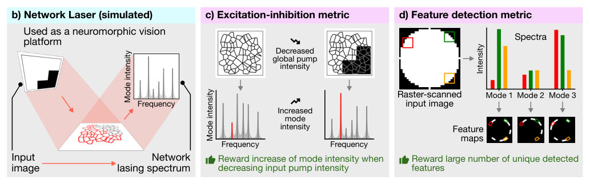
<figcaption class="paper-figure-caption"><b>Fig 1.</b> Figure 1. Working principle of graph-theoretic design of random lasing networks. a) Graph-theoretic analysis pipeline linking graph-based metrics (top) to physical lasing dynamics (middle), and neuromorphic vision performance (bottom). Interpolating between the topologies of two networks, from Waxman (left) to Buffon (right), in graph-metric space reveals associated changes in lasing dynamics (number of lasing modes) and physical vision performance (excitation–inhibition metric), enabling computationally cheap design and optimisation in an abstract graph space that bypasses expensive physical simulations. b) Schematic of the random lasing network used as an image processor: input images are...</figcaption>
</figure>
<figure class="paper-figure-card">
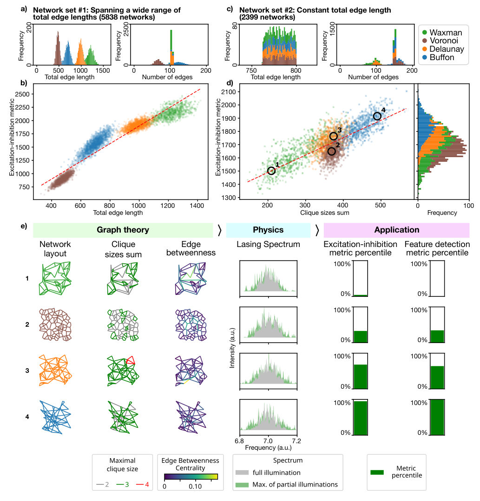
<figcaption class="paper-figure-caption"><b>Fig 2.</b> Figure 2. Identifying relevant network parameters for physical vision. a,b) In a set of networks (Network set #1) generated using four different algorithms (Buffon, Delaunay, Waxman and Voronoi) and spanning a wide range of total edge lengths, the excitation-inhibition metric is strongly correlated with the total edge length. c,d) Among networks with constrained total edge lengths (Network set #2), Buffon networks generally perform best on the two vision metrics. Among the considered graph-theoretic parameters, Clique sizes sum is the best predictor of the excitation-inhibition metric. e) Comparative illustration of network topology, graph-theoretic parameters, lasing spectra, and the two...</figcaption>
</figure>
<figure class="paper-figure-card">
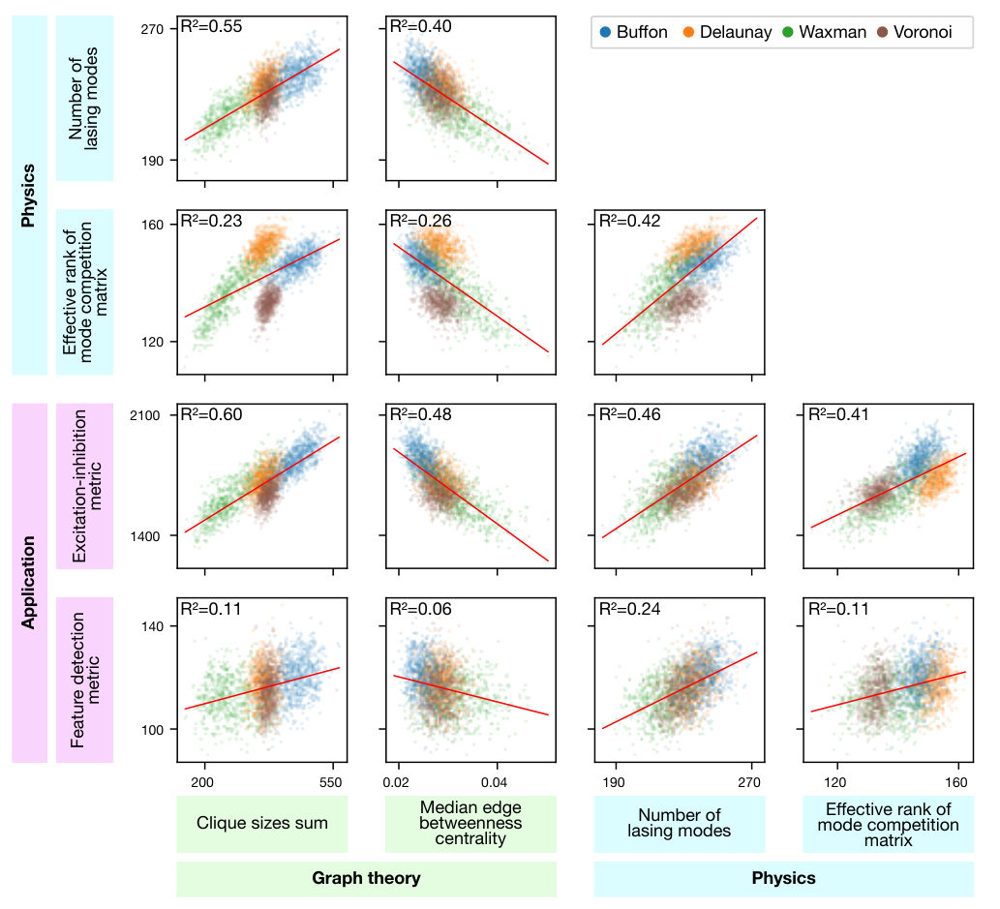
<figcaption class="paper-figure-caption"><b>Fig 3.</b> Figure 3. Relationship between graph-theoretic parameters, physical effects, and machine learning performance. System parameters from graph theory (clique sizes sum and edge betweenness centrality median), physics (number of lasing modes and effective rank of the mode competition matrix), and vision (excitation-inhibition metric and feature detection metric) are mutually correlated in the set of networks with constrained total edge length (Figure 2). (The same plot for the set of networks with varying total edge lengths can be seen in Supplementary Figure S2.)</figcaption>
</figure>
<figure class="paper-figure-card">

<figcaption class="paper-figure-caption"><b>Fig 4.</b> Figure 2b showing the strong positive correlation with the excitation-inhibition metric (see Supplementary Figure S1 for strong positive correlation with the feature detection metric). Physically, networks with longer total edge length have longer cavities which support more spatially overlapping modes (∝L/λ, for a total length L and a light wavelength λ) within the gain bandwidth,48 enhancing mode competition,49 which is consistent with the observed correlation. Maximising the total edge length within the geometrical constraints is thus a simple, physics-informed heuristic to improve vision performance. In contrast, vision performance is only weakly correlated with the number of nodes in...</figcaption>
</figure>
<figure class="paper-figure-card">
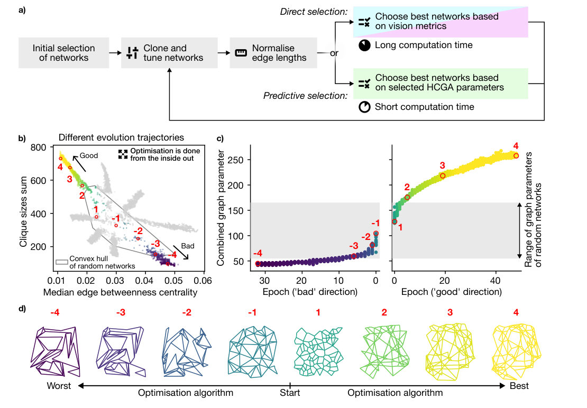
<figcaption class="paper-figure-caption"><b>Fig 5.</b> Figure 4. Evolutionary graph-based optimisation of random lasing networks for physical vision. a) Schematic of the evolutionary algorithm. b) Networks can be tuned along arbitrary directions in a two-parameter graph-theoretic space. c) The combined graph parameter improves over epochs of the algorithm under predictive selection (for the definition of the combined graph parameter, see Section S4). d) Evolution of the network layouts illustrates substantial topological changes.</figcaption>
</figure>
</div>

<p><strong>Summary.</strong> The paper introduces a novel, efficient framework to design physical neural networks using random lasing structures. By establishing a three-layer link between simple graph metrics and complex lasing physics, they guide an optimization algorithm that yields superior network topologies for vision tasks compared to random designs.</p>
<p><strong>Why it may be interesting.</strong> This work provides a powerful methodology for designing complex quantum or nonlinear optical systems by abstracting the design space into graph theory, bypassing expensive full-scale physical simulations of many-body dynamics.</p>
<details>
<summary>Detailed structure</summary>
<p><strong>Main problem.</strong> Optimizing physical neural network designs, which rely on complex nonlinear dynamics, is computationally prohibitive due to the high dimensionality of possible topologies.</p>
<p><strong>Main result.</strong> The authors established a quantitative link where simple graph-theoretic metrics can predict and guide the optimization of lasing physics, leading to network topologies that significantly outperform random designs in image classification tasks.</p>
<p><strong>Method.</strong> They developed an evolutionary algorithm guided by graph metrics (like clique sizes sum and edge betweenness centrality) to optimize random lasing networks, which are then tested on simulated image-classification benchmarks.</p>
<p><strong>Model / system.</strong> The exemplar system is a random lasing network composed of interconnected nanoscale waveguides hosting strongly coupled lasing modes. The analysis maps graph structure metrics onto the nonlinear lasing physics and subsequent vision performance.</p>
<p><strong>Key observables.</strong> Graph metrics (e.g., clique sizes sum, median edge betweenness centrality), physical observables (number of lasing modes, inter-mode competition), and vision proxies (Excitation-inhibition metric, Feature detection metric).</p>
<p><strong>Important parameters / regimes.</strong> Total edge length ($L$), shot size $S$ for training, and hyperparameters $(k, C)$ for the logistic regression classifier.</p>
<p><strong>Assumptions / limitations.</strong> The core assumption is that graph properties can predict emergent nonlinear dynamics and learning performance in active, strongly-interacting physical networks, allowing optimization in an abstract graph space rather than simulating substrate physics.</p>
<p><strong>Figures summary.</strong> Figures illustrate a three-layer pipeline (Graph $
ightarrow$ Physics $
ightarrow$ Application), schematics of the lasing network, and show correlations between various graph parameters and vision metrics across different network sets.</p>
<p><strong>Paper structure.</strong> The paper establishes a theoretical framework linking graph theory to physical optics via random lasing networks. It then uses this link to guide an evolutionary optimization process based on graph metrics, culminating in testing the optimized topologies on simulated image classification tasks using logistic regression.</p>
</details>
<details>
<summary>Abstract</summary>
<p>Physical neural networks perform learning through the intrinsic nonlinear dynamics of matter. Optimising their design presents a considerable challenge: complex many-body physics can provide powerful computation, but are expensive to simulate and large experimental optimisation runs are impractical to fabricate. Hence, the high-dimensional space of possible network topologies cannot be effectively directly searched. Here, we show that this search can be efficiently performed in an abstract graph space that is vastly cheaper to explore. Using random lasing networks -- composed of interconnected nanoscale waveguides and hosting strongly coupled lasing modes -- as an exemplar physical vision system, we establish a quantitative three-layer link: simple graph-theoretic metrics predict the nonlinear lasing physics, which in turn predicts vision performance. After validating this relationship using physical simulations, we exploit it to drive an evolutionary algorithm using graph metrics, producing network topologies that outperform random designs at a fraction of the computational cost (3000$\times$ speed-up compared to physical simulation). On simulated image-classification tasks, graph-optimised networks substantially improve classification accuracy. As our framework operates on network topology rather than substrate-specific physics, we anticipate it can transfer to other network-based physical learning systems, providing an efficient route for the directed design and optimisation of complex, strongly-interacting physical neural networks.</p>
</details>
<p><sub><a href="#top">↑ back to top</a></sub></p>

<p><a id="paper-2608.12712"></a></p>
<h3 id="parity-floors-in-quantum-denoisers-a-closed-form-benchmark-for-fixed-map-denoising-networks"><a href="http://arxiv.org/abs/2608.12712v1">Parity Floors in Quantum Denoisers: A Closed-Form Benchmark for Fixed-Map Denoising Networks</a></h3>
<p><strong>Authors:</strong> Jaeuk Kim<br>
<strong>Type:</strong> theory · <strong>Category:</strong> quantum information and computing · <strong>PDF:</strong> <a href="https://arxiv.org/pdf/2608.12712v1">https://arxiv.org/pdf/2608.12712v1</a><br>
<strong>Analysis basis:</strong> full PDF text, analyzed in chunks
<strong>Topic relevance:</strong> <code>driven-dissipative phase transition</code> <strong>2/5</strong> · <code>Keldysh / 2PI / non-Gaussian methods</code> <strong>1/5</strong> · <code>correlated / nonlocal dissipation</code> <strong>1/5</strong> · <code>methods for driven-dissipative</code> <strong>1/5</strong> · <code>quantum measurements</code> <strong>1/5</strong></p>
<div class="figure-strip-hint">↔ Scroll figures horizontally</div>
<div class="paper-figures-scroll">
<figure class="paper-figure-card">
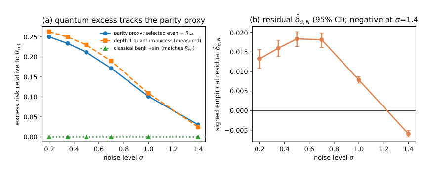
<figcaption class="paper-figure-caption"><b>Fig 1.</b> Figure 1: (a) The measured depth-1 quantum excess closely tracks the parity proxy (selected even reference −Rref) ≈∥Πoddmσ∥2 across noise levels, while a classical bank that adds the sine sector matches Rref. (b) The signed empirical residual ˆδσ,N is small in absolute value (≤0.018); error bars are paired bootstrap 95% CIs (Table 2). The negative value at σ=1.4 reflects that the finite even reference need not contain the quantum even feature span.</figcaption>
</figure>
</div>

<p><strong>Summary.</strong> This work introduces a novel benchmark to analyze fixed quantum feature maps used in diffusion denoisers. By decomposing the reconstruction error into even and odd components, the authors prove that the primary limitation (the 'parity floor') is dictated by the target's odd spectral content rather than the map's ability to represent all features. This guides future research toward nonclassical data access methods.</p>
<p><strong>Why it may be interesting.</strong> It provides rigorous mathematical tools for diagnosing fundamental limitations in variational quantum algorithms applied to physical processes like diffusion modeling, suggesting that parity constraints are a more fundamental barrier than simple model capacity.</p>
<details>
<summary>Detailed structure</summary>
<p><strong>Main problem.</strong> The study aims to determine which structural constraint limits fixed quantum feature maps when used within diffusion denoisers, distinguishing between representational limitations and other sources of error.</p>
<p><strong>Main result.</strong> The excess risk in the denoising process is shown to be dominated by an irreducible 'parity floor,' which is a property of the noise-conditioned target rather than static map capacity.</p>
<p><strong>Method.</strong> The authors develop a closed-form benchmark using analytic heat-kernel noising on a torus, decomposing the excess risk into parity and within-sector residual components based on even/odd subspaces.</p>
<p><strong>Model / system.</strong> The model involves quantum feature maps (e.g., depth-1 RY+CNOT+Pauli-Z) applied to a diffusion process defined by a Gibbs law prior on the torus ($\mathbb{T}^n$).</p>
<p><strong>Key observables.</strong> Excess risk, parity proxy ($\hat{P}_\sigma$), signed empirical residual ($\hat{\delta}_{\sigma,N}$), and the irreducible lower bound $\|\Pi_{	ext{odd}}m_\sigma\|^2$.</p>
<p><strong>Important parameters / regimes.</strong> Noise scale ($\sigma$), feature map depth, and the structure of the prior (e.g., 3-body coupling on $\mathbb{T}^n$).</p>
<p><strong>Assumptions / limitations.</strong> The analysis relies on the assumption that the excess risk can be decomposed into parity and within-sector components; the results are limited to fixed feature maps.</p>
<p><strong>Figures summary.</strong> Figures illustrate how quantum excess tracks the calculated parity proxy across varying noise levels, confirming parity dominance over capacity limitations.</p>
<p><strong>Paper structure.</strong> The paper first establishes a theoretical decomposition of the risk based on even/odd subspaces. It then applies this framework to specific fixed quantum feature map families (depth-1) and compares performance against classical benchmarks using various priors (torus, signed-XY).</p>
</details>
<details>
<summary>Abstract</summary>
<p>Fixed quantum feature maps are increasingly inserted into diffusion denoisers, but standard image benchmarks do not reveal which structural constraint limits them. We introduce CoupledPhaseTexture, a torus-diffusion benchmark with analytic heat-kernel noising that separates parity, within-sector approximation, and sample-complexity limitations. For the depth-1 RY+CNOT+Pauli-Z family we prove a containment-free parity floor: all reachable features are even functions of the encoded angles while the sine components of the Bayes denoiser are odd, so the excess risk splits exactly into an inaccessible odd part and a within-sector residual. The first term is an irreducible, noise-scale-resolved lower bound holding for every even feature class, with no containment, linearity, or closedness assumption on the feature class. The obstruction is a property of the noise-conditioned denoising target rather than static representability: the floor is re-derived at each noise scale because the target's parity content changes with noise. The measured excess is dominated by the parity proxy on two distinct priors. Higher-order Z readouts improve the even sector, but entanglement does not lower the floor and re-uploading does not reliably close it. Classical controls confirm the deficit is parity rather than quantumness: a cosine-only bank is floored similarly, while adding the sine sector matches the reference. Among tested constructions, odd readouts and a noise-coupled encoder do not match the sine-carrying classical bank. These results motivate nonclassical data access or feature classes without efficient classical surrogates; they do not establish either as sufficient for quantum advantage.</p>
</details>
<p><sub><a href="#top">↑ back to top</a></sub></p>

<p><a id="paper-2608.12512"></a></p>
<h3 id="type-iii-von-neumann-algebras-are-magical"><a href="http://arxiv.org/abs/2608.12512v1">Type III von Neumann Algebras are Magical</a></h3>
<p><strong>Authors:</strong> Mudassir Moosa<br>
<strong>Type:</strong> theory · <strong>Category:</strong> other · <strong>PDF:</strong> <a href="https://arxiv.org/pdf/2608.12512v1">https://arxiv.org/pdf/2608.12512v1</a><br>
<strong>Analysis basis:</strong> full PDF text, analyzed in chunks
<strong>Topic relevance:</strong> <code>analog quantum simulation</code> <strong>2/5</strong> · <code>Keldysh / 2PI / non-Gaussian methods</code> <strong>1/5</strong> · <code>correlated / nonlocal dissipation</code> <strong>1/5</strong> · <code>quantum measurements</code> <strong>1/5</strong></p>
<div class="figure-strip-hint">↔ Scroll figures horizontally</div>
<div class="paper-figures-scroll">
<figure class="paper-figure-card">

<figcaption class="paper-figure-caption"><b>Fig 1.</b> FIG. 1. A schematic representation of a nested sequence of lattices Λ1 ⊂Λ2 ⊂· · · that limits to</figcaption>
</figure>
<figure class="paper-figure-card">
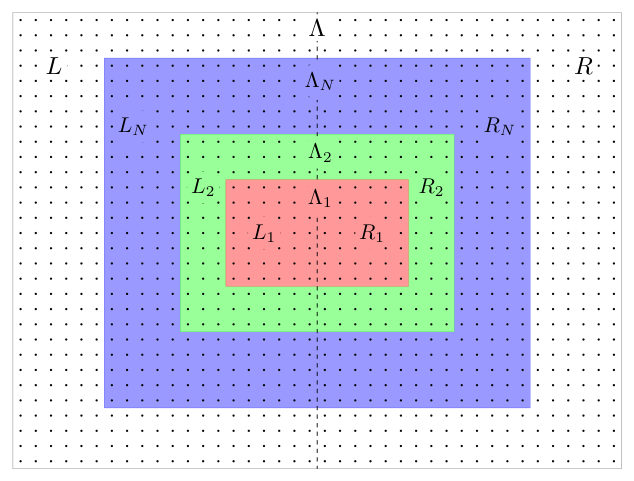
<figcaption class="paper-figure-caption"><b>Fig 2.</b> Fig. 1. If we denote the algebra of operators that act trivially on LN by AN ⊂B(HN), we</figcaption>
</figure>
</div>

<p><strong>Summary.</strong> This paper connects the mathematical classification of local operator algebras (von Neumann algebras) to computational resources. It argues that systems whose local structure requires a Type III algebra—typical in QFTs—must inherently possess an infinite amount of 'magic' resource for their description to be mathematically consistent.</p>
<p><strong>Why it may be interesting.</strong> It provides a deep connection between abstract algebraic structures (Type III factors) and concrete physical requirements for computation/simulation, which is highly relevant to understanding quantum field theories and holographic duality.</p>
<details>
<summary>Detailed structure</summary>
<p><strong>Main problem.</strong> The work establishes a fundamental link between the mathematical structure of local von Neumann algebras (specifically Type III) and the required quantum resources ('magic') for simulating physical systems in the thermodynamic limit.</p>
<p><strong>Main result.</strong> It is proven that Type III von Neumann algebras fundamentally require an infinite amount of 'magic' resource, linking algebraic classification to computational complexity.</p>
<p><strong>Method.</strong> The analysis uses the formalism of von Neumann algebras and examines the inductive limits of finite lattice systems (thermodynamic limit) while quantifying resources using the concept of 'magic' gates.</p>
<p><strong>Model / system.</strong> The study considers quantum field theories, quantum gravity models, and general lattice systems analyzed in their thermodynamic limit. The mathematical framework relies on local von Neumann algebras describing these infinite-dimensional systems.</p>
<p><strong>Key observables.</strong> Magic (number of non-Clifford gates), Type III von Neumann Algebras, Local Subregions in QFTs.</p>
<p><strong>Important parameters / regimes.</strong> Thermodynamic limit ($N 	o \infty$), Bounded vs. Infinite Magic Resource.</p>
<p><strong>Assumptions / limitations.</strong> The analysis relies on the formal structure of local algebras and assumes that the thermodynamic limit can be properly constructed via inductive limits of finite systems.</p>
<p><strong>Figures summary.</strong> Figure 1 schematically represents a nested sequence of lattices ($\Lambda_N$) partitioning into subregions, leading to an inductive limit algebra $A$.</p>
<p><strong>Paper structure.</strong> The paper progresses by defining the mathematical tools (von Neumann algebras, magic resource) and then constructing the argument: showing that bounded local resources preclude the existence of Type III algebras in the infinite limit.</p>
</details>
<details>
<summary>Abstract</summary>
<p>The number of non-Clifford gates needed to perform a task, or simply \textit{magic}, is a resource for fault-tolerant quantum computation. Von Neumann algebras provide a formal mathematical structure to describe infinite-dimensional quantum systems, such as those in quantum field theory or quantum statistical mechanics. A particularly important class of von Neumann algebras is called Type III algebras, for which the standard notions of finite-dimensional systems such as density matrices and traces break down. In this work, we argue that Type III von Neumann algebras fundamentally require an infinite amount of magic. Specifically, we consider the thermodynamic limit of finite-dimensional quantum systems, such as lattice systems, and show that if the states in the thermodynamic limit possess only a bounded amount of magic, the resulting local von Neumann algebra cannot be of Type III. Our result has direct implications for the quantum simulations of quantum field theories, for which the algebra of a local subregion is known to be of Type III.</p>
</details>
<p><sub><a href="#top">↑ back to top</a></sub></p>

<p><a id="paper-2608.13493"></a></p>
<h3 id="quantum-correlations-and-basis-independent-coherence-distribution-in-two-gravitational-cat-states"><a href="http://arxiv.org/abs/2608.13493v1">Quantum correlations and Basis-Independent Coherence Distribution in Two Gravitational Cat States</a></h3>
<p><strong>Authors:</strong> Mostafa Mansour, Mansoura Oumennana<br>
<strong>Type:</strong> theory · <strong>Category:</strong> quantum information and computing · <strong>PDF:</strong> <a href="https://arxiv.org/pdf/2608.13493v1">https://arxiv.org/pdf/2608.13493v1</a><br>
<strong>Analysis basis:</strong> full PDF text, analyzed in chunks
<strong>Topic relevance:</strong> <code>analog quantum simulation</code> <strong>2/5</strong> · <code>correlated / nonlocal dissipation</code> <strong>1/5</strong> · <code>quantum measurements</code> <strong>1/5</strong></p>
<div class="figure-strip-hint">↔ Scroll figures horizontally</div>
<div class="paper-figures-scroll">
<figure class="paper-figure-card">
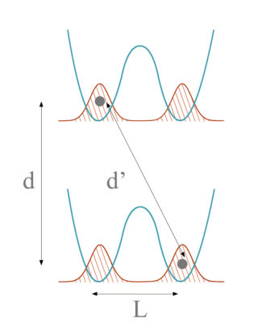
<figcaption class="paper-figure-caption"><b>Fig 1.</b> FIG. 1. Illustration of the gravcat model. Two particles are confined in a double-well potential with minima distanced by L. The parameter d (d′) denotes the separation between the particles when they occupy the same (opposite) relative min- ima.</figcaption>
</figure>
<figure class="paper-figure-card">
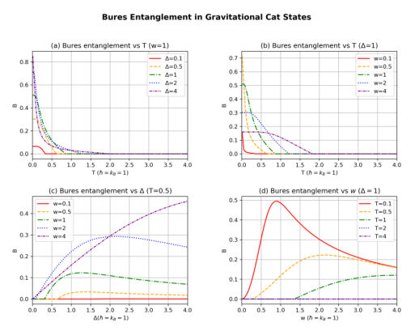
<figcaption class="paper-figure-caption"><b>Fig 2.</b> FIG. 2. Bures measure of entanglement B as a function of T, ∆and w. (a) B vs T for fixed w = 1 and varying ∆; (b) B vs T for fixed ∆= 1 and varying w; (c) B vs ∆for fixed T = 0.5 and varying w; (d) B vs w for fixed ∆= 1 and varying T.</figcaption>
</figure>
<figure class="paper-figure-card">
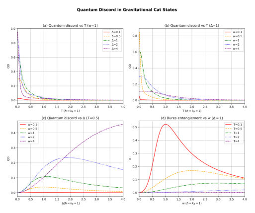
<figcaption class="paper-figure-caption"><b>Fig 3.</b> FIG. 3. QD as a function of T, ∆and w. (a) QD vs T for fixed w = 1 and varying ∆; (b) QD vs T for fixed ∆= 1 and varying w; (c) QD vs ∆for fixed T = 0.5 and varying w; (d) QD vs w for fixed ∆= 1 and varying T.</figcaption>
</figure>
<figure class="paper-figure-card">
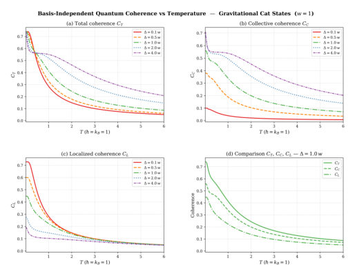
<figcaption class="paper-figure-caption"><b>Fig 4.</b> FIG. 4. Total, collective and localized coherence vs tempera- ture for ∆= 0.1w, 0.5w, 1.0w, 2.0w, 4.0w at fixed w = 1. (a) CT , (b) CC, (c) CL, (d) comparison for ∆= 1.0w.</figcaption>
</figure>
<figure class="paper-figure-card">
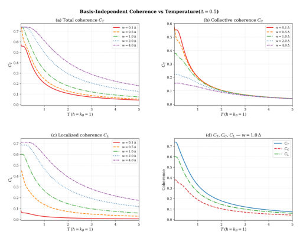
<figcaption class="paper-figure-caption"><b>Fig 5.</b> FIG. 5. Coherence vs temperature for fixed ∆= 0.5 and several w. (a) CT , (b) CC, (c) CL, (d) comparison for w = 1.</figcaption>
</figure>
</div>

<p><strong>Summary.</strong> The paper analyzes the distribution of basis-independent coherence and quantum correlations in two particles coupled by gravity within double-well potentials. By decomposing total coherence into collective and localized parts, it demonstrates that local coherence is more resilient to temperature effects than inter-particle correlations. This highlights a resource hierarchy where local superpositions persist longer than globally entangled states as the system heats up.</p>
<p><strong>Why it may be interesting.</strong> This work provides a detailed resource quantification framework for non-local quantum resources (coherence) in a physically relevant setting (gravity), showing how local versus global entanglement survives thermalization differently.</p>
<details>
<summary>Detailed structure</summary>
<p><strong>Main problem.</strong> The study investigates how quantum correlations and basis-independent coherence are distributed between collective (inter-particle) and localized (intra-particle) components in a system interacting via gravity.</p>
<p><strong>Main result.</strong> Localized coherence ($C_L$) is found to be more robust against thermal fluctuations than the collective coherence ($C_C$), while increasing gravitational coupling ($\Delta$) preferentially enhances $C_C$.</p>
<p><strong>Method.</strong> The analysis uses quantum information measures like Bures distance, Quantum Discord (QD), and a basis-independent measure of coherence derived from the Quantum Jensen–Shannon Divergence (QJSD).</p>
<p><strong>Model / system.</strong> The system consists of two massive particles confined in a double-well potential and coupled by their mutual Newtonian gravitational interaction. The dynamics are governed by a bipartite Hamiltonian involving parameters for single-particle energy ($w$) and coupling strength ($\Delta$).</p>
<p><strong>Key observables.</strong> Total coherence ($C_T$), Collective coherence ($C_C$), Localized coherence ($C_L$), Bures entanglement, Quantum Discord.</p>
<p><strong>Important parameters / regimes.</strong> Temperature ($T$ or $eta$), Gravitational coupling ($\Delta$), Single-particle energy scale ($w$).</p>
<p><strong>Assumptions / limitations.</strong> The analysis relies on a two-level approximation for the potential eigenstates and assumes thermal equilibrium with a reservoir characterized by temperature $T$.</p>
<p><strong>Figures summary.</strong> Figures illustrate how entanglement (Bures measure) and Quantum Discord vary with $T$, $\Delta$, and $w$; coherence measures show distinct dependencies, confirming that $C_L$ is more robust than $C_C$ against thermal noise.</p>
<p><strong>Paper structure.</strong> The paper introduces the physical model and Hamiltonian, defines various quantum correlation and coherence metrics ($C_T = C_C + C_L$), and then systematically analyzes the dependence of these measures on temperature, gravitational coupling ($\Delta$), and single-particle energy scale ($w$).</p>
</details>
<details>
<summary>Abstract</summary>
<p>We study the distribution of quantum correlations and basis-independent coherence in a pair of massive particles confined in a double-well potential and coupled through their mutual Newtonian gravitational interaction. Non-classical correlations are characterized using Bures distance of entanglement and quantum discord, while coherence is quantified through the square root of the quantum Jensen--Shannon divergence (QJSD) from the maximally mixed state, yielding a measure that is invariant under arbitrary unitary transformations and is therefore genuinely basis-independent. The total coherence $C_T$ decomposes into two operationally distinct contributions: the collective coherence $C_C$, which captures quantum correlations between the two subsystems, and the localized coherence $C_L$, which captures the intrinsic quantum coherence of each individual subsystem. We analyze how temperature $T$, the gravitational coupling $Δ$, and the single-particle energy scale $w$ govern the redistribution of coherence between its collective and localized components. Our results show that $C_L$ is more robust against thermal fluctuations than $C_C$, and that increasing $Δ$ preferentially enhances collective coherence by strengthening gravitationally induced inter-particle correlations.</p>
</details>
<p><sub><a href="#top">↑ back to top</a></sub></p>

<p><a id="paper-2608.13161"></a></p>
<h3 id="controlled-dynamics-of-a-multi-component-discrete-time-quantum-walker"><a href="http://arxiv.org/abs/2608.13161v1">Controlled dynamics of a multi-component discrete-time quantum walker</a></h3>
<p><strong>Authors:</strong> Vikash Mittal, Tomasz Sowiński<br>
<strong>Type:</strong> theory · <strong>Category:</strong> other · <strong>PDF:</strong> <a href="https://arxiv.org/pdf/2608.13161v1">https://arxiv.org/pdf/2608.13161v1</a><br>
<strong>Analysis basis:</strong> full PDF text, analyzed in chunks
<strong>Topic relevance:</strong> <code>analog quantum simulation</code> <strong>2/5</strong> · <code>quantum measurements</code> <strong>1/5</strong></p>
<div class="figure-strip-hint">↔ Scroll figures horizontally</div>
<div class="paper-figures-scroll">
<figure class="paper-figure-card">
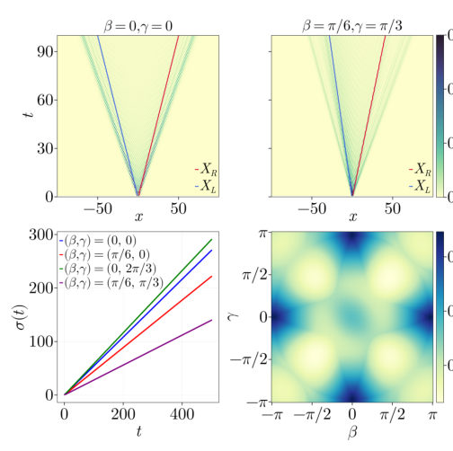
<figcaption class="paper-figure-caption"><b>Fig 1.</b> FIG. 1. (Top Row): The probability distribution P(x, t) for the three–state walk for two representative choices of the SU(3) coin parameters (β, γ), as indicated in each panel. The walker is initially localized at the origin with the coin in equal superposition of |R⟩and |B⟩as given by Eq. (9). The color scale shows the total probability at each lattice site. The red and the blue lines indicate the expectation value of the probability distributions XL and XR. (Bottom Left): The time evolution of σ(t) for four representative pairs of couplings (β, γ). (Bottom Right): slope m(β, γ) that is calculated from the long-time evolution over the full range of couplings β and γ.</figcaption>
</figure>
<figure class="paper-figure-card">
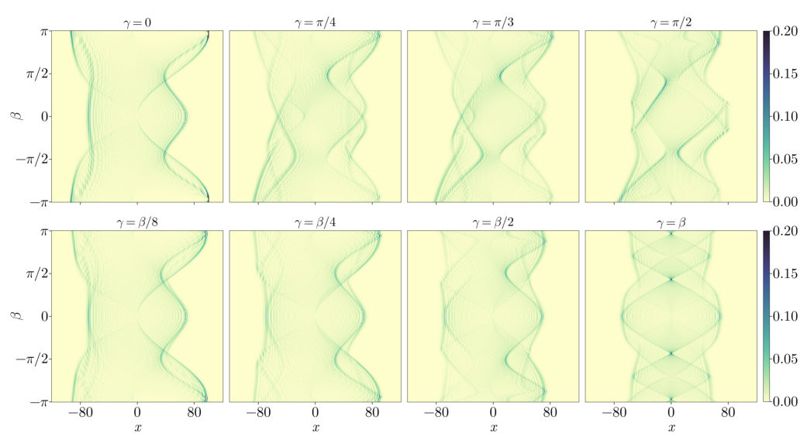
<figcaption class="paper-figure-caption"><b>Fig 2.</b> FIG. 2. The probability P(x, t) of finding the walker at lattice site x at fixed time t = 100 and different coupling angle β going from −π to π. (Top Row): fixed values of γ = 0, π/4, π/3 and π/2. (Bottom Row): fixed ratios γ/β = 1/8, 1/4, 1/2, and 1. The dynamics is symmetric under the swap β →γ, except for the mirror reflection about x = 0.</figcaption>
</figure>
<figure class="paper-figure-card">
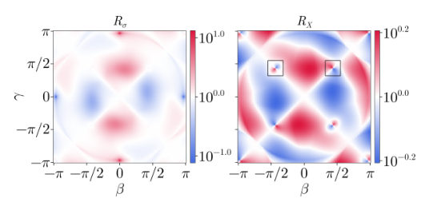
<figcaption class="paper-figure-caption"><b>Fig 3.</b> FIG. 3. Ratio of variances Rσ = σ2 R/σ2 L (Left) and the mean- position RX = −XR/XL (Right) between the right and left halves of the lattice at fixed evolution time t = 500 as a function of the coin parameters (β, γ). The decoupling limit β = γ = 0 is nearly symmetric, while finite couplings generate extended regions of pronounced directional bias, organized along smooth curves in parameter space.</figcaption>
</figure>
<figure class="paper-figure-card">
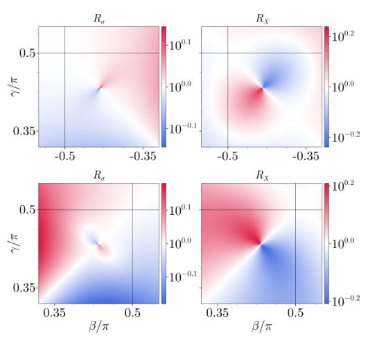
<figcaption class="paper-figure-caption"><b>Fig 4.</b> FIG. 4. Ratio of variances Rσ = σ2 R/σ2 L (Left) and the mean-position RX = −XR/XL (Right) between the right and left halves of the lattice by zooming in the region which are marked by squares in Fig. 3. The horizontal and vertical solid lines mark β = ±π/2 and γ = π/2 that helps to see the rela- tive points on interest.</figcaption>
</figure>
</div>

<p><strong>Summary.</strong> The paper investigates a three-component quantum walker whose dynamics are controlled by an SU(3) coin operator. By tuning the coupling parameters, researchers map out a complex phase diagram that allows for engineering specific transport behaviors. This demonstrates a powerful method to control spreading and localization in multi-component quantum systems.</p>
<p><strong>Why it may be interesting.</strong> This work provides a general framework for engineering quantum transport using internal degrees of freedom (the qutrit components) rather than relying solely on external lattice geometry or topological constraints.</p>
<details>
<summary>Detailed structure</summary>
<p><strong>Main problem.</strong> The study aims to systematically tune and control the transport properties of a multi-component quantum walker by manipulating pairwise couplings within its coin operator.</p>
<p><strong>Main result.</strong> The system exhibits a rich phase diagram in parameter space, allowing for engineered regimes ranging from rapid ballistic spreading to strongly anisotropic dynamics with partial localization.</p>
<p><strong>Method.</strong> Analysis involves simulating the time evolution of the state using an SU(3) coin operator and quantifying transport via spatio-temporal probability distributions and side-resolved mean/variance ratios.</p>
<p><strong>Model / system.</strong> The model is a discrete-time quantum walk of a three-component particle (qutrit) on a 1D lattice. The evolution is governed by $U = S C(\alpha, eta, \gamma)$, where the coin operator $C$ uses Gell-Mann matrices to couple internal components.</p>
<p><strong>Key observables.</strong> Spatio-temporal probability distribution $P(x, t)$; ballistic spreading rate $m(eta, \gamma)$; side-resolved mean position ratios ($R_X$) and variance ratios ($R_\sigma$).</p>
<p><strong>Important parameters / regimes.</strong> The coupling parameters $(\alpha, eta, \gamma)$, particularly exploring regimes near $eta \sim\pm\pi/2$ and $\gamma \sim\pm\pi/2$.</p>
<p><strong>Assumptions / limitations.</strong> The analysis assumes the walk remains ballistic across all tested parameter regimes; a fixed initial state $|\Psi(0)
angle = rac{1}{\sqrt{2}}(|R
angle + |B
angle) \otimes |0
angle$ is used.</p>
<p><strong>Figures summary.</strong> Figures illustrate $P(x, t)$ for different couplings and show how side-resolved observables ($\langle X_L 
angle, \langle X_R 
angle$) reveal directional asymmetry across the parameter space.</p>
<p><strong>Paper structure.</strong> The paper systematically analyzes the dynamics by first defining the controlled Hamiltonian/evolution operator, then applying diagnostics like $\sigma(t)$ and side-resolved ratios to map out how varying $(eta, \gamma)$ controls transport regimes in a structured phase diagram.</p>
</details>
<details>
<summary>Abstract</summary>
<p>We investigate a discrete-time quantum walk of a three-component quantum particle on a one-dimensional lattice. As coin operators, we employ parameterized rotations generated by the Gell-Mann matrices, which enable systematic tuning of the couplings between the internal components. We analyze how these couplings influence and control the dynamics by systematically exploring the position-space probability distribution across a broad region of the parameter space. To quantify the impact of different inter-component couplings, we further examine the ratio of the mean position to the variance in each half of the lattice. Our results indicates that the system supports a rich variety of transport regimes, ranging from nearly symmetric, rapidly spreading walks to strongly anisotropic dynamics with partial localization. This framework thus provides a new avenue for engineering targeted spreading and trapping behavior in multicomponent discrete-time quantum walks.</p>
</details>
<p><sub><a href="#top">↑ back to top</a></sub></p>

<p><a id="paper-2608.12505"></a></p>
<h3 id="defect-induced-optical-magnons-and-local-magnetic-correlations-in-mnsb2te4"><a href="http://arxiv.org/abs/2608.12505v1">Defect-induced optical magnons and local magnetic correlations in MnSb2Te4</a></h3>
<p><strong>Authors:</strong> Dhurba R. Jaishi, Bing Li, Tianxiong Han, S. X. M. Riberolles, D. M. Pajerowski, Jiaqiang Yan, R. J. McQueeney<br>
<strong>Type:</strong> both · <strong>Category:</strong> strongly correlated electrons · <strong>PDF:</strong> <a href="https://arxiv.org/pdf/2608.12505v1">https://arxiv.org/pdf/2608.12505v1</a><br>
<strong>Analysis basis:</strong> full PDF text, analyzed in chunks
<strong>Topic relevance:</strong> <code>analog quantum simulation</code> <strong>2/5</strong> · <code>Keldysh / 2PI / non-Gaussian methods</code> <strong>1/5</strong></p>
<div class="figure-strip-hint">↔ Scroll figures horizontally</div>
<div class="paper-figures-scroll">
<figure class="paper-figure-card">
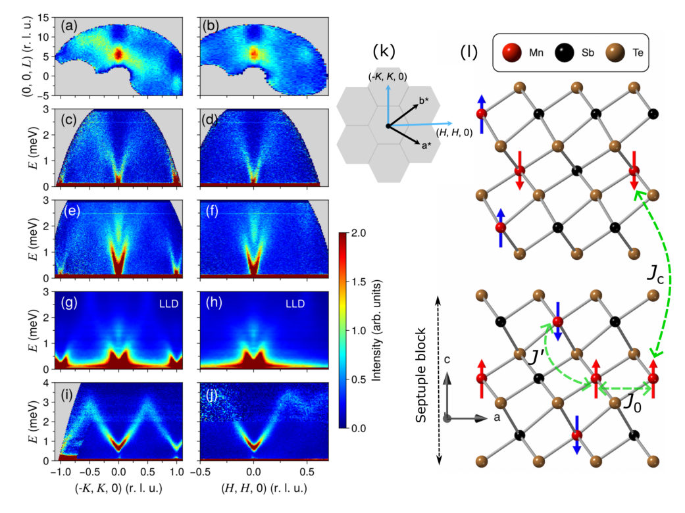
<figcaption class="paper-figure-caption"><b>Fig 1.</b> FIG. 1. (a-f) INS data of AFM MnSb2Te4 measured at 2 K and Ei = 3.32 meV. (a-b) Constant energy slices around E = 2 meV with an energy bin width of ∆E = ±0.5. (c-f) The in-plane spin wave dispersions. These data are integrated in the transverse direction with H/K =[-0.02, 0.02], L = [9, 12] in (c) and (d), and L = [3, 9] in (e) and (f). (g-h) The LLD simulations in the respective directions at 2 K. (i-j) The INS data of MBT measured at 2 K, where high-resolution INS data with Ei = 3.32 meV superposed on top of the data measured with Ei = 6.6 meV. The data are integrated in the (0, 0, L) direction in the range of L = [0, 20] for Ei = of 6.6 meV and L = [3, 12] for Ei = of 3.32 meV. MBT INS...</figcaption>
</figure>
<figure class="paper-figure-card">
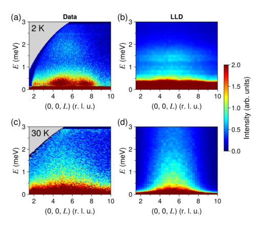
<figcaption class="paper-figure-caption"><b>Fig 2.</b> FIG. 2. Spin wave excitations in the out-of-plane direction in MST. (a), (c) INS data measured at 2 K and 30 K along the (0, 0, L) direction, respectively. (b), (d) LLD calculations corresponding to conditions of panels (a) and (c). The data and simulations are integrated in the transverse direction with H/K =[-0.02, 0.02] (r. l. u.).</figcaption>
</figure>
<figure class="paper-figure-card">
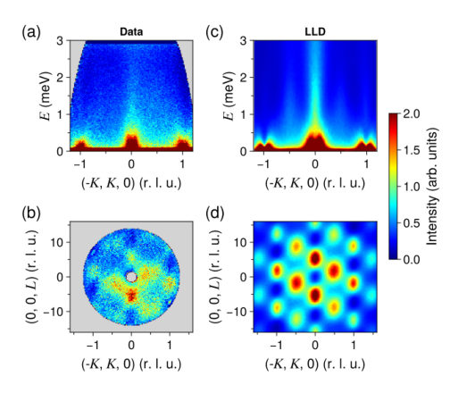
<figcaption class="paper-figure-caption"><b>Fig 3.</b> FIG. 3. Magnetic dimer formation above TN. (a) INS data measured along the in-plane direction at T = 30 K. The data are integrated in the transverse directions with H =[-0.1, 0.1] and L =[3, 9] (r. l. u.). (b) Constant energy cut around E = 1 meV with an energy bin width of ∆E = ±0.1. (c-d) LLD simulation of INS scattering intensity at T = 30 K with sampling corresponding to panels (a) and (b), respectively.</figcaption>
</figure>
<figure class="paper-figure-card">
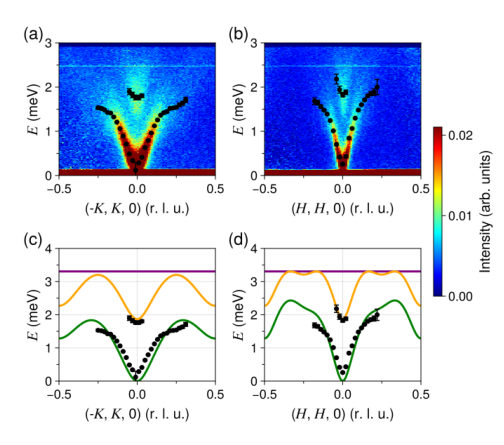
<figcaption class="paper-figure-caption"><b>Fig 4.</b> FIG. 4. (a-b) INS data measured along (−K, K, 0) and (H, H, 0) directions at 2 K, respectively, overplotted with the extracted peak centers from fitting. The data are integrated in the (0, 0, L) direction in the range of L = [3, 9] (r. l. u.). (c-d) Calculated spin wave dispersion using the minimal tri- layer model.</figcaption>
</figure>
</div>

<p><strong>Summary.</strong> This work investigates how structural defects, specifically antisite mixing, modify the magnetic properties of topological magnetic insulators like $  ext{MnSb}_2 ext{Te}_4$. By combining inelastic neutron scattering with spin-dynamics simulations, the authors demonstrate that these defects induce a strong, measurable antiferromagnetic coupling responsible for an observable optical magnon gap. This highlights defect engineering as a powerful tool to tune fundamental magnetic interactions in quantum materials.</p>
<p><strong>Why it may be interesting.</strong> The study provides a concrete example of how disorder (antisite defects) fundamentally alters the magnetic Hamiltonian and excitation spectrum of a quantum material, which is relevant for understanding engineered correlated states in condensed matter systems.</p>
<details>
<summary>Detailed structure</summary>
<p><strong>Main problem.</strong> The study aims to directly probe defect-induced magnetic interactions and understand how antisite mixing affects the spin dynamics of topological magnetic insulators.</p>
<p><strong>Main result.</strong> Antisite mixing generates disordered sublattices, leading to a distinct optical magnon mode with a large gap ($\Delta' \approx 1.5$ meV), indicating strong defect-mediated antiferromagnetic coupling ($J'$).</p>
<p><strong>Method.</strong> The research combines inelastic neutron scattering (INS) experiments on single crystals with semi-classical spin-dynamics simulations using Landau-Lifshitz Dynamics (LLD).</p>
<p><strong>Model / system.</strong> The physical system is $    ext{MnSb}_2 ext{Te}_4$, a topological magnetic insulator in the $   ext{Mn}(    ext{Bi},    ext{Sb})_2  ext{Te}_4$ family, which exhibits significant antisite defects. The analysis uses spin Hamiltonians incorporating various exchange couplings ($J_0, J_c, J'$).</p>
<p><strong>Key observables.</strong> Optical magnon gap ($\Delta'$), spin wave dispersion curves (acoustic and optic branches), magnetic dimer structure factor.</p>
<p><strong>Important parameters / regimes.</strong> Defect concentration ($\sim 15\%$ in MST vs. $<3\%$ in MBT); coupling strengths ($J' \approx 0.7$ meV, $J_0 = -0.075$ meV).</p>
<p><strong>Assumptions / limitations.</strong> The analysis assumes that the observed optical magnon mode is a signature of defect-induced ferrimagnetism and relies on fitting spin wave dispersions to model parameters.</p>
<p><strong>Figures summary.</strong> Figures show INS data (constant energy slices, in-plane dispersion) for MST compared to MBT, illustrating the distinct magnetic excitation spectrum caused by defects.</p>
<p><strong>Paper structure.</strong> The paper progresses from identifying the problem of defect influence in topological insulators to presenting experimental INS measurements, followed by theoretical modeling using spin Hamiltonians and LLD simulations to quantify the defect-induced couplings.</p>
</details>
<details>
<summary>Abstract</summary>
<p>Magnetic defect engineering offers a route to manipulate and control magnetic and electronic states in quantum materials. In the Mn(Bi,Sb)2Te4 family of topological magnetic insulators, Sb substitution facilitates site mixing between Mn and Sb atoms that affects magnetic order and band topology. Here we directly probe these defect-induced magnetic interactions using inelastic neutron scattering on single crystals of MnSb2Te4. We find that antisite mixing generates inequivalent and disordered magnetic sublattices where strong defect-induced antiferromagnetic coupling produces an optical magnon with a large gap. Semi-classical spin-dynamics simulations accurately capture magnetic excitations in the ordered and paramagnetic states and identify that linear Mn-Te-Mn bonds mediate coupling to antisite magnetic defects.</p>
</details>
<p><sub><a href="#top">↑ back to top</a></sub></p>

<p><a id="paper-2608.12711"></a></p>
<h3 id="split-q-a-scalable-sequential-quantum-computing-framework-for-coherent-controlled-islanding"><a href="http://arxiv.org/abs/2608.12711v1">SPLIT-Q: A Scalable Sequential Quantum Computing Framework for Coherent Controlled Islanding</a></h3>
<p><strong>Authors:</strong> Yuqi Jiang, Zhiding Liang, Qiang Guan, Yan Li, Ganesh Kumar Venayagamoorthy<br>
<strong>Type:</strong> both · <strong>Category:</strong> quantum information and computing · <strong>PDF:</strong> <a href="https://arxiv.org/pdf/2608.12711v1">https://arxiv.org/pdf/2608.12711v1</a><br>
<strong>Analysis basis:</strong> full PDF text, analyzed in chunks
<strong>Topic relevance:</strong> <code>QC/QI experiment</code> <strong>2/5</strong> · <code>quantum measurements</code> <strong>1/5</strong></p>
<div class="figure-strip-hint">↔ Scroll figures horizontally</div>
<div class="paper-figures-scroll">
<figure class="paper-figure-card">
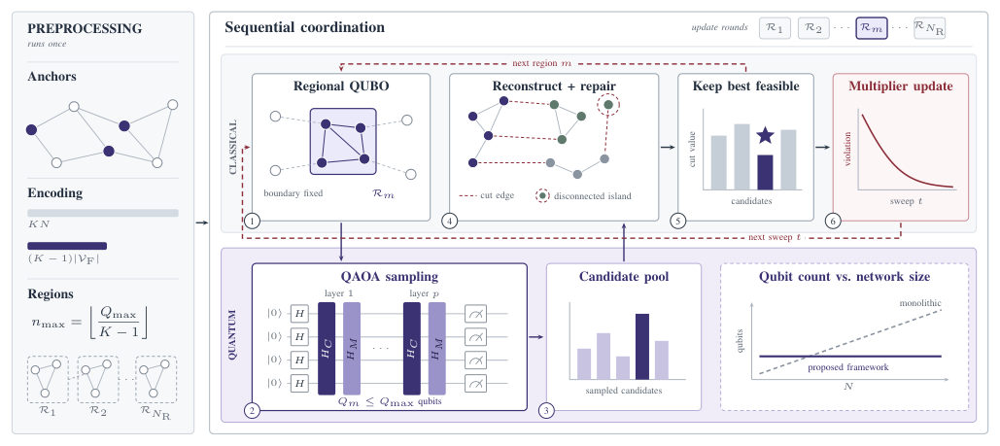
<figcaption class="paper-figure-caption"><b>Fig 1.</b> Fig. 1. Workflow of the proposed method. Preprocessing fixes coherent groups as anchors, encodes only the free buses, and partitions them into regions whose register sizes Qm do not exceed Qmax, with nmax denoting the regional bus limit and NR the number of regions. Each round optimizes active region Rm and evaluates its candidates on the full network, while projected multipliers carry global violations forward without slack qubits. The circled numbers give the execution order within one update round, which crosses the classical and quantum lanes twice; the dashed panel is a scaling annotation rather than a pipeline stage. Here, p is the QAOA depth and t indexes coordination sweeps. The...</figcaption>
</figure>
<figure class="paper-figure-card">
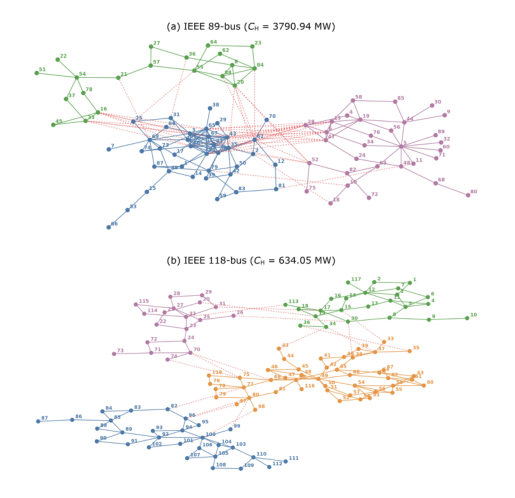
<figcaption class="paper-figure-caption"><b>Fig 2.</b> Fig. 2. Reconstructed feasible islanding solutions on the IEEE 89- and 118- bus systems. Node color denotes island membership, dashed edges mark inter- island cuts, and each panel reports the corresponding hardware cut value CH in MW.</figcaption>
</figure>
<figure class="paper-figure-card">
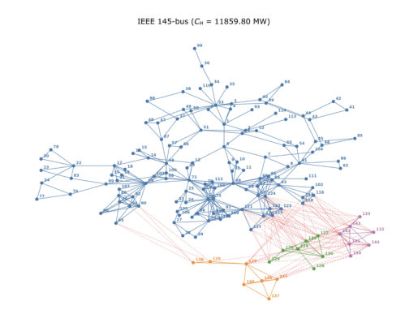
<figcaption class="paper-figure-caption"><b>Fig 3.</b> Fig. 3. Reconstructed feasible islanding solution on the IEEE 145-bus system, using the same color and line conventions as Fig. 2.</figcaption>
</figure>
<figure class="paper-figure-card">
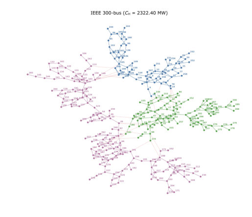
<figcaption class="paper-figure-caption"><b>Fig 4.</b> Fig. 4. Reconstructed feasible islanding solution on the IEEE 300-bus system, using the same color and line conventions as Fig. 2.</figcaption>
</figure>
</div>

<p><strong>Summary.</strong> This paper introduces SPLIT-Q, a scalable quantum framework designed to solve large power system islanding problems. It overcomes the exponential resource scaling limitations of monolithic quantum formulations by employing regionalization and sequential solving techniques within QAOA. The results demonstrate that this method can accurately find optimal partitions on real quantum hardware for very large networks while maintaining a fixed, manageable qubit footprint.</p>
<p><strong>Why it may be interesting.</strong> While focused on power grids, the core methodology—decoupling exponentially scaling combinatorial problems into fixed-width, sequentially solvable quantum subproblems—is highly relevant to developing scalable quantum algorithms for general hard optimization problems in condensed matter physics or materials science.</p>
<details>
<summary>Detailed structure</summary>
<p><strong>Main problem.</strong> The paper addresses the computational challenge of solving large-scale controlled islanding problems in power grids, which is a complex combinatorial optimization task.</p>
<p><strong>Main result.</strong> A novel sequential distributed QAOA framework was proposed that successfully solves these large problems on current quantum hardware by keeping the required qubit width fixed, unlike monolithic approaches whose complexity scales exponentially with network size.</p>
<p><strong>Method.</strong> The method formulates the problem as boundary-conditioned regional QUBO subproblems solved sequentially. This approach partitions the optimization variables into manageable regions to fit within limited quantum resources.</p>
<p><strong>Model / system.</strong> The physical system is an electrical power grid modeled as a weighted graph (buses and transmission lines). The goal is to partition this network into electrically sustainable 'islands' by minimizing the total weight of cut edges.</p>
<p><strong>Key observables.</strong> Disruption cost (cut value in MW), quantum resource demand (two-qubit gate count $G$, circuit depth $d$), and solution quality compared against classical solvers like Gurobi.</p>
<p><strong>Important parameters / regimes.</strong> Network size (up to 300 buses), fixed qubit budget ($Q_{\max}$), and the scaling factor $\chi$ which measures width reduction relative to network size.</p>
<p><strong>Assumptions / limitations.</strong> The primary assumption is that regionalization successfully decouples the quantum resource requirement from the total network size, allowing fixed-width devices to solve arbitrarily large systems.</p>
<p><strong>Figures summary.</strong> Figures illustrate the workflow of partitioning free buses into regions for sequential QAOA sampling and show reconstructed islanding solutions on various IEEE benchmark systems.</p>
<p><strong>Paper structure.</strong> The paper first defines the physical problem (controlled islanding) using graph theory and optimization formulations. It then critiques monolithic quantum approaches due to scaling issues, proposes the scalable regionalized framework, details its implementation via sequential QUBO solving, and finally validates it by comparing results across various IEEE benchmark systems on real hardware.</p>
</details>
<details>
<summary>Abstract</summary>
<p>Growing integration of distributed energy resources increases power-system variability and uncertainty. During disturbances, these effects can intensify generation-load imbalances and cascading failures. Controlled islanding limits their propagation by partitioning a compromised grid into connected, electrically sustainable islands. However, classical methods face rapidly growing computational costs as network size and island count increase. Quantum optimization offers an alternative for exploring this combinatorial partition space. Yet monolithic quantum formulations encode all assignment decisions in one circuit, causing qubit demand and circuit complexity to scale with network size. In this study, a qubit-bounded sequential distributed quantum approximate optimization algorithm (QAOA) framework is proposed to tackle coherent controlled islanding under limited quantum resources. It formulates the optimization as boundary-conditioned regional quadratic unconstrained binary optimization (QUBO) subproblems that are solved sequentially within a fixed qubit budget. Thus, circuit width remains independent of network size, with aggregate quantum workload scaling linearly on bounded-degree networks. Evaluation covers eleven IEEE systems from 9 to 300 buses using IBM quantum computing resources, with Gurobi and monolithic QAOA as references. Across all systems, the framework recovers feasible Gurobi-optimal partitions under noise, confirming the resilience of its solution quality. The results further show that the proposed method substantially reduces quantum-resource demand and circuit complexity relative to monolithic QAOA, allowing large islanding problems to be addressed within current hardware limits. The proposed framework provides a feasible and scalable pathway for quantum optimization in large-scale power systems.</p>
</details>
<p><sub><a href="#top">↑ back to top</a></sub></p>

<p><a id="paper-2608.13528"></a></p>
<h3 id="ambient-unitaries-dont-enable-shallow-group-designs"><a href="http://arxiv.org/abs/2608.13528v1">Ambient unitaries don't enable shallow group designs</a></h3>
<p><strong>Authors:</strong> Maxwell West, M. Cerezo, Martin Larocca<br>
<strong>Type:</strong> theory · <strong>Category:</strong> quantum information and computing · <strong>PDF:</strong> <a href="https://arxiv.org/pdf/2608.13528v1">https://arxiv.org/pdf/2608.13528v1</a><br>
<strong>Analysis basis:</strong> full PDF text, analyzed in chunks
<strong>Topic relevance:</strong> <code>quantum measurements</code> <strong>2/5</strong></p>
<div class="figure-strip-hint">↔ Scroll figures horizontally</div>
<div class="paper-figures-scroll">
<figure class="paper-figure-card">
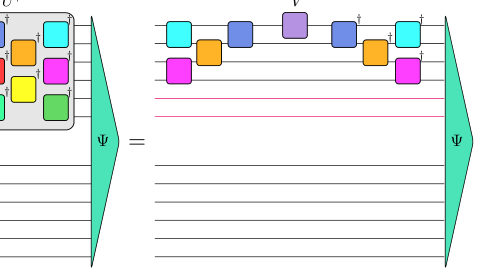
<figcaption class="paper-figure-caption"><b>Fig 1.</b> Figure 1. 2-designs over a group G which possesses an invariant state |Ψ⟩∈H⊗2 formed by averaging over an ensemble of sublinear-depth unitaries belonging to G are straightforwardly disallowed by a simple lightcone argument [4]. The invariant state effectively acts as a resource for converting a unitary from the group to its Hermitian conjugate. Indeed, for U ∈G we have U ⊗2(V ⊗1H) |Ψ⟩= ((UV U †) ⊗1H) |Ψ⟩, so that there are regions of (V ⊗1H) that are “undisturbed” if (and with high probability only if) U is of sublinear-depth. Modulo some mild technical assumptions on the entanglement structure of |Ψ⟩and the scrambling capacity of G, this can be used to rule out such sublinear-depth...</figcaption>
</figure>
</div>

<p><strong>Summary.</strong> This paper proves that achieving approximate unitary designs over several important symmetry groups requires circuit depths that scale linearly with system size, even when utilizing unitaries from outside the defined subgroup. This result closes a loophole in prior work and has major implications for quantum information theory by setting fundamental depth overheads for benchmarking protocols.</p>
<p><strong>Why it may be interesting.</strong> It provides rigorous theoretical constraints on the resource overhead required for practical quantum characterization protocols (like tomography or benchmarking), directly impacting hardware feasibility assessments.</p>
<details>
<summary>Detailed structure</summary>
<p><strong>Main problem.</strong> The paper investigates the fundamental limits on how efficiently approximate unitary designs can be constructed when sampling from specific subgroups of the full unitary group, particularly when using local nearest-neighbor gates.</p>
<p><strong>Main result.</strong> It proves that these limitations hold even if 'ambient' unitaries (from outside the subgroup) are used, implying that many natural quantum tomography and benchmarking schemes suffer from a dramatic circuit depth overhead compared to ideal protocols.</p>
<p><strong>Method.</strong> The analysis uses lower bounds derived from comparing the $k$-th moment channel fidelity ($\Phi^{(k)}$) against the Haar measure using invariant projectors associated with maximally entangled states.</p>
<p><strong>Model / system.</strong> The study focuses on various quantum groups, including the matchgate, orthogonal $  ext{O}(d)$, symplectic $    ext{SP}(d/2)$, and Clifford groups, applied to nearest-neighbor gates on a one-dimensional lattice.</p>
<p><strong>Key observables.</strong> Approximate $k$-design fidelity ($\epsilon$), circuit depth ($L$), and the diamond distance between moment channels.</p>
<p><strong>Important parameters / regimes.</strong> The required depth scales linearly with system size ($n$) for all tested groups, establishing an $\Omega(n)$ lower bound.</p>
<p><strong>Assumptions / limitations.</strong> The core contribution is extending previous results by showing that the limitation holds even when unitaries used are not strictly confined to the target subgroup (i.e., using ambient unitaries).</p>
<p><strong>Figures summary.</strong> Figure 1 illustrates how sublinear-depth designs over groups with invariant states are disallowed via lightcone arguments.</p>
<p><strong>Paper structure.</strong> The paper establishes a general lower bound on design fidelity based on invariant projectors, specializes this for pure entangled states, and then applies these theorems to specific quantum groups (matchgate, orthogonal, symplectic, Clifford) to prove the necessary linear depth scaling.</p>
</details>
<details>
<summary>Abstract</summary>
<p>Characterising the efficiency with which designs over various subsets of the unitary group may be constructed is an important goal of quantum information theory. While it is now known that approximate unitary designs can be realised in depth logarithmic in the system size, it has recently been shown that ensembles of local nearest-neighbour sublinear-depth one-dimensional circuits over the matchgate, orthogonal, and symplectic groups cannot form approximate 2-designs over their parent groups; similarly, sublinear-depth ensembles of Cliffords cannot form a Clifford 4-design. In this note we show that this remarkable exponential separation is not merely an artefact of restricting to ensembles consisting of unitaries from the subgroups themselves, but rather that no ensemble of local nearest-neighbour sublinear-depth unitaries can realise approximate designs in the aforementioned cases, even when employing "ambient" unitaries from beyond the subgroup itself (possibly acting on ancilla qubits). This implies that various natural tomography and benchmarking schemes which involves sampling from these groups suffer from a dramatic circuit depth overhead compared to similar protocols which involve sampling from the full unitary group. We additionally conclude that, in all of the above cases, the known linear-depth design constructions are up to constant factors optimal.</p>
</details>
<p><sub><a href="#top">↑ back to top</a></sub></p>

<p><a id="paper-2608.12770"></a></p>
<h3 id="correlation-versus-causation-in-quantum-criticality"><a href="http://arxiv.org/abs/2608.12770v1">Correlation versus Causation in Quantum Criticality</a></h3>
<p><strong>Authors:</strong> Conrad Wichmann, Ryan Thorngren, Ruben Verresen<br>
<strong>Type:</strong> theory · <strong>Category:</strong> statistical mechanics · <strong>PDF:</strong> <a href="https://arxiv.org/pdf/2608.12770v1">https://arxiv.org/pdf/2608.12770v1</a><br>
<strong>Analysis basis:</strong> full PDF text, analyzed in chunks
<strong>Topic relevance:</strong> <code>Keldysh / 2PI / non-Gaussian methods</code> <strong>1/5</strong> · <code>driven-dissipative phase transition</code> <strong>1/5</strong> · <code>non-equilibrium universality</code> <strong>1/5</strong></p>
<div class="figure-strip-hint">↔ Scroll figures horizontally</div>
<div class="paper-figures-scroll">
<figure class="paper-figure-card">
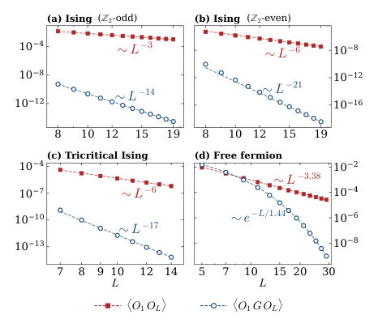
<figcaption class="paper-figure-caption"><b>Fig 1.</b> FIG. 1. Correlation vs. causation in (1 + 1)D critical systems. In each panel, the edge-to-edge correlation ⟨O1OL⟩ and causation ⟨O1 G OL⟩are computed between a ZT 2 -odd operator O1 at the left end and its mirror image OL at the right end. (a,b) Critical Ising with O1 = Y1X2 (Z2-odd) and O1 = Y1Z2X3 (Z2-even), respectively. (c) Tricritical Ising via the spin-1 Blume-Capel chain with O1 = Sy 1 Sz 2Sx 3 . (d) BDI Majorana chain with parameters (t−1, t0, t1) = (1, 3, 2) and tα = 0 otherwise, with O1 = ˜γ1 and OL = γL. Panels (a,b,d) are obtained by free-fermion diagonalization; (c) by exact diagonalization in the spin basis.</figcaption>
</figure>
<figure class="paper-figure-card">
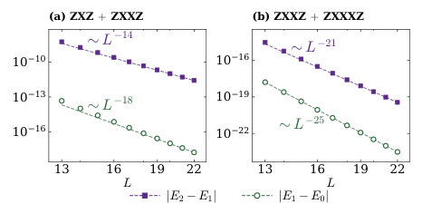
<figcaption class="paper-figure-caption"><b>Fig 2.</b> FIG. 2. Finite-size edge-mode splittings in gapless SPTs. Starting with fine-tuned gSPTs H and H′ with de- coupled qubit edge modes, we couple to Oleft 1,2 and Oright 1,2 of the main text. (a) H, with Oleft 1 = Y2Y3X4Y5 and Oleft 2 = Y2X3Y4Y5 [Eq. (10)]; splittings ∼L−14, L−18. (b) H′, with Oleft 1 = −X2Y3X4Z5 and Oleft 2 = Y2Y3Y4Z5 [Eq. (11)]; split- tings ∼L−21, L−25.</figcaption>
</figure>
<figure class="paper-figure-card">
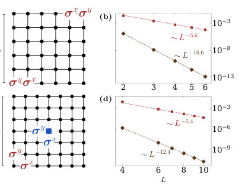
<figcaption class="paper-figure-caption"><b>Fig 3.</b> FIG. 3. Correlation and causation in the (2+1)D Ising CFT. (a) L × L Ising lattice with operators O1 := σy 1,1σx 1,2 (bottom left) and O2 := σx L,L−1σy L,L (top right). (b) Decay of ⟨O1O2⟩and ⟨O1GO2⟩with L. (c) Lattice with a magnetic line defect (blue square) and O2 at its center, shown for odd L; even L differs slightly as it has no center site. Operator definitions are unchanged up to repositioning. (d) Correlation and causation with the defect, where odd-L data is rescaled by a constant factor.</figcaption>
</figure>
</div>

<p><strong>Summary.</strong> This work introduces 'causation,' defined as the static susceptibility, as an alternative to standard correlation functions for studying quantum criticality. It demonstrates that causation decays much faster than correlation due to mathematical constraints involving time derivatives. This difference allows researchers to pinpoint fundamental physical operators and accurately predict phenomena like edge-mode splittings in topological phases.</p>
<p><strong>Why it may be interesting.</strong> It provides a powerful new diagnostic tool for critical systems that can distinguish between physical influences (causation) and mere statistical correlations, which is crucial for understanding emergent phenomena in strongly interacting quantum matter.</p>
<details>
<summary>Detailed structure</summary>
<p><strong>Main problem.</strong> The paper contrasts standard correlation functions with a novel measure called 'causation' (static susceptibility) to investigate how physical influences decay at quantum critical points.</p>
<p><strong>Main result.</strong> Causation can exhibit significantly faster decay rates than correlations, revealing physics—such as specific primary operators or edge-mode splittings—that are otherwise masked by the slower decaying correlation terms.</p>
<p><strong>Method.</strong> The analysis employs conformal field theory (CFT) techniques, resolvent calculations involving Green's functions, and numerical methods like DMRG to compare scaling laws for both observables.</p>
<p><strong>Model / system.</strong> The study applies to various critical systems, including the $(2+1)$D Ising model, gapless symmetry-protected topological (SPT) phases in 1D, and general quantum critical points described by CFTs.</p>
<p><strong>Key observables.</strong> Correlation functions $\langle O_1(x) O_2(0) 
angle$ vs. Causation/Static Susceptibility $\lim_{\lambda	o 0} \partial_\lambda \langle A(x) 
angle_\lambda$.</p>
<p><strong>Important parameters / regimes.</strong> Dimensionality (1+1D, 2+1D), scaling exponents ($\Delta$), and the perturbation strength ($\lambda$).</p>
<p><strong>Assumptions / limitations.</strong> The analysis relies on identifying operators that are not time derivatives to correctly calculate causation, contrasting this with standard correlation measurements.</p>
<p><strong>Figures summary.</strong> Figures illustrate numerical comparisons of correlation vs. causation decay rates for various Ising variants in (1+1)D and show the scaling of edge-mode splittings derived from bulk causal influence in SPTs.</p>
<p><strong>Paper structure.</strong> The paper systematically introduces the concept of causation, derives its theoretical scaling predictions via CFT, applies this framework to analyze boundary effects in 1D SPTs, and demonstrates how it reveals hidden primary operators in higher dimensions.</p>
</details>
<details>
<summary>Abstract</summary>
<p>Correlation functions $\langle O_1(x) O_2(0) \rangle$ reveal scaling dimensions through spatial decay. We instead consider static susceptibility, the change in $\langle O_1(x) \rangle$ from perturbing the Hamiltonian by $O_2(0)$, which we term causation for short. In a conformal field theory (CFT), dimensional analysis predicts decay of $|x|^{-2Δ}$ for correlation and $|x|^{-2Δ+1}$ for causation. Yet we find causation can decay up to fifteen additional orders in $x$ through a general mechanism, which we trace to time-derivative fields being unable to contribute to static response. In higher-dimensional CFTs, this mechanism ensures leading causation arises from primaries, even when descendants dominate correlation, which we leverage with DMRG to identify a previously unresolved corner primary of $Δ\approx 8.8$ and a heavy magnetic line defect primary of $Δ\approx 4.6$ in the $(2+1)$D critical Ising model. Moreover, the same mechanism governs edge-mode localization in $(1+1)$D gapless symmetry-protected topological phases, explaining previously observed anomalously small edge-mode splittings and guiding our construction of spin chains with splittings as small as $1/L^{18}$ and $1/L^{25}$.</p>
</details>
<p><sub><a href="#top">↑ back to top</a></sub></p>

<p><a id="paper-2608.12472"></a></p>
<h3 id="stabilizer-complexity-and-the-pythons-lunch"><a href="http://arxiv.org/abs/2608.12472v1">Stabilizer complexity and the Python's lunch</a></h3>
<p><strong>Authors:</strong> Abhirup Bhattacharya, Jatin Narde, Onkar Parrikar, Suprakash Paul<br>
<strong>Type:</strong> theory · <strong>Category:</strong> other · <strong>PDF:</strong> <a href="https://arxiv.org/pdf/2608.12472v1">https://arxiv.org/pdf/2608.12472v1</a><br>
<strong>Analysis basis:</strong> full PDF text, analyzed in chunks
<strong>Topic relevance:</strong> <code>Keldysh / 2PI / non-Gaussian methods</code> <strong>1/5</strong> · <code>correlated / nonlocal dissipation</code> <strong>1/5</strong> · <code>quantum measurements</code> <strong>1/5</strong></p>
<div class="figure-strip-hint">↔ Scroll figures horizontally</div>
<div class="paper-figures-scroll">
<figure class="paper-figure-card">
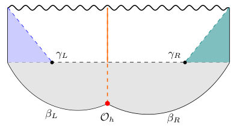
<figcaption class="paper-figure-caption"><b>Fig 1.</b> FIG. 1: Euclidean path integral preparation of PET state on the t = 0 slice. Lorentzian evolution of this state produces a geometry containing two black holes connected by a long wormhole.</figcaption>
</figure>
<figure class="paper-figure-card">
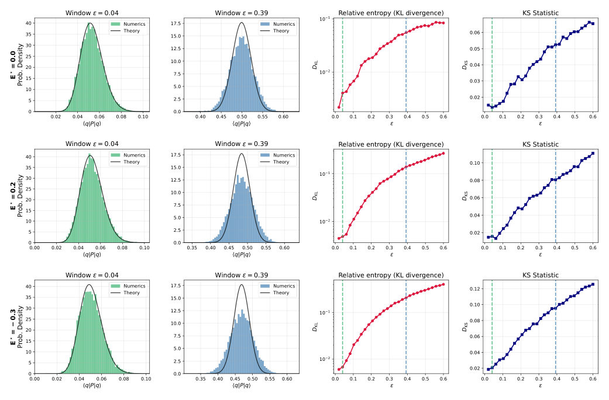
<figcaption class="paper-figure-caption"><b>Fig 2.</b> FIG. 2: Numerical evidence for Assumption-1 in the SYK model with N = 20, averaged over 20 realizations. Rows correspond to three different energy centers (E⋆= 0.0, 0.2, −0.3). The first two columns compare the numerical distribution of ⟨q|P|q⟩against the exact theoretical prediction for two representative microcanonical window sizes (ϵ = 0.04 and ϵ = 0.39). First column: for sufficiently small values of ϵ, our assumption holds very well. Second column: as ϵ increases beyond the RMT energy scale, ϵ &gt; ERMT, the assumption begins to break down. The rightmost columns quantify the degree of validity of this randomness assumption, plotting the KL and KS divergences as a function of the...</figcaption>
</figure>
</div>

<p><strong>Summary.</strong> This paper calculates the stabilizer complexity of reduced density matrices derived from partially entangled thermal states in holographic CFTs. Using Wigner negativity, the authors show that this complexity is exponentially sensitive to a feature called the 'python's lunch' in the bulk geometry. This links quantum information measures directly to gravitational structure via AdS/CFT correspondence.</p>
<p><strong>Why it may be interesting.</strong> While highly theoretical, the connection between quantum complexity measures (like stabilizer complexity) and bulk geometry (via AdS/CFT) provides a powerful tool for understanding entanglement structure in strongly coupled systems relevant to condensed matter physics.</p>
<details>
<summary>Detailed structure</summary>
<p><strong>Main problem.</strong> The study investigates the stabilizer complexity of the reduced density matrix for a partially entangled thermal (PET) state within the framework of holographic CFTs.</p>
<p><strong>Main result.</strong> The relative Wigner negativity, which measures stabilizer complexity, is found to be exponentially enhanced by the presence of a 'python's lunch' region in the bulk geometry compared to its absence.</p>
<p><strong>Method.</strong> The analysis employs concepts from quantum information theory (Wigner negativity) applied to holographic models, utilizing assumptions about spectral pseudorandomness and averaging over Haar random unitaries via the replica trick.</p>
<p><strong>Model / system.</strong> The system involves PET states in a holographic CFT context, dual to black hole geometries containing a 'python's lunch' region. Calculations are performed on microcanonical truncations of these states, sometimes modeled using the SYK Hamiltonian.</p>
<p><strong>Key observables.</strong> Wigner negativity ($N$), relative Wigner negativity $N(
ho_R|
ho^{(0)}_R)$, and geometric quantities like extremal surface areas ($A_{	ext{out}}, A_{	ext{min}}$).</p>
<p><strong>Important parameters / regimes.</strong> The energy window size ($\epsilon$) must be small compared to the characteristic RMT energy scale ($E_{	ext{RMT}}$); $G_N$ (Newton's constant) appears in the exponent.</p>
<p><strong>Assumptions / limitations.</strong> Assumes pseudorandomness of the CFT spectrum and heavy operator insertion; relies on fixed energy boundary conditions for universal statements.</p>
<p><strong>Figures summary.</strong> Figure 1 illustrates the Euclidean path integral preparation of the PET state, depicting two black holes connected by a wormhole.</p>
<p><strong>Paper structure.</strong> The paper progresses from defining the physical system (PET states in holography) and key diagnostics (Wigner negativity) to deriving the complexity formula based on geometric areas. It then applies these methods using approximations derived from random matrix theory and tests them against specific models like SYK.</p>
</details>
<details>
<summary>Abstract</summary>
<p>In this note, we study the stabilizer complexity of the reduced density matrix corresponding to one side of a partially entangled thermal (PET) state with fixed energy boundary conditions in a holographic CFT. In particular, we study Wigner negativity, an operationally meaningful magic monotone which can be interpreted as the complexity of classically simulating any quantum circuit preparation of the reduced state on the subregion. Using assumptions on the pseudorandomness of the CFT spectrum and the heavy operator insertion, we observe that the Wigner negativity of the PET state relative to the microcanonical density matrix at the given energy is given by $\exp\left[\frac{1}{8G_N}(A_{\text{out}} - A_{\text{min}})\right]$, where $A_{\text{out}}$ is the area of the outer extremal surface, while $A_{\text{min}}$ is the area of the minimal extremal surface. Thus, the stabilizer complexity of the reduced density matrix on the boundary subregion is $O(1)$ in the absence of a python's lunch, but gets exponentially enhanced in the presence of a python's lunch in the bulk geometry.</p>
</details>
<p><sub><a href="#top">↑ back to top</a></sub></p>

<p><a id="paper-2608.12508"></a></p>
<h3 id="the-nature-of-the-pseudogap-in-the-insulating-phase-of-highly-disordered-superconductors"><a href="http://arxiv.org/abs/2608.12508v1">The nature of the "pseudogap" in the insulating phase of highly disordered superconductors</a></h3>
<p><strong>Authors:</strong> Mark Nikolaevsky, Abhisek Samanta, Nandini Trivedi, Aviad Frydman<br>
<strong>Type:</strong> both · <strong>Category:</strong> strongly correlated electrons · <strong>PDF:</strong> <a href="https://arxiv.org/pdf/2608.12508v1">https://arxiv.org/pdf/2608.12508v1</a><br>
<strong>Analysis basis:</strong> full PDF text, analyzed in chunks
<strong>Topic relevance:</strong> <code>Keldysh / 2PI / non-Gaussian methods</code> <strong>1/5</strong> · <code>analog quantum simulation</code> <strong>1/5</strong> · <code>driven-dissipative phase transition</code> <strong>1/5</strong></p>
<div class="figure-strip-hint">↔ Scroll figures horizontally</div>
<div class="paper-figures-scroll">
<figure class="paper-figure-card">
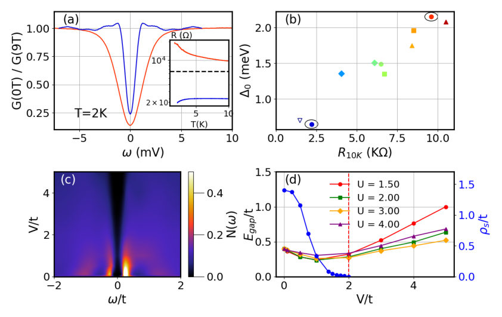
<figcaption class="paper-figure-caption"><b>Fig 1.</b> FIG. 1. Effect of the disorder on the gap. Panel (a) depicts the normalized tunneling density (G) of two tunneling spectra from the same sample at two different disorder levels at 2K. The highly disordered measurement is shown in red and a less disordered measurement, on the verge of SIT, is shown in blue. The inset depicts the corresponding resistance R as a function of temperature in red and blue lines respectively. The dashed line shows the quantum of resistance h/(2e)2 = 6.45KΩ. Panel (b) summarizes the fitted gap as a function of disorder (represented as the resistivity of the sample at 10K) from the experimental results using the Dentelski et al. model [40] at 2K. Each sample is shown...</figcaption>
</figure>
<figure class="paper-figure-card">
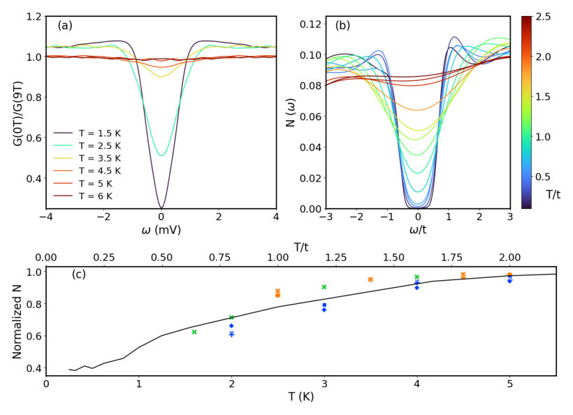
<figcaption class="paper-figure-caption"><b>Fig 2.</b> FIG. 2. The density of states (DOS) as a function of temperature. Panels (a) and (b) show the evolution of the DOS as a function of temperature in the insulating phase from the experimental measurements and the theoretical calculation respectively. (a) depicts the measured normalized tunneling density as a function energy (applied dc voltage) at varying temperatures from 1.5K to 6K, (b) is the calculated DOS as a function of energy (ω) using the DQMC simulations, at a disorder level V/t = 2.5 and at varying temperatures. Panel (c) shows the temperature dependence of the normalized low-energy DOS, obtained by integrating the spectra within ±∆. The symbols represent experimentally extracted...</figcaption>
</figure>
<figure class="paper-figure-card">
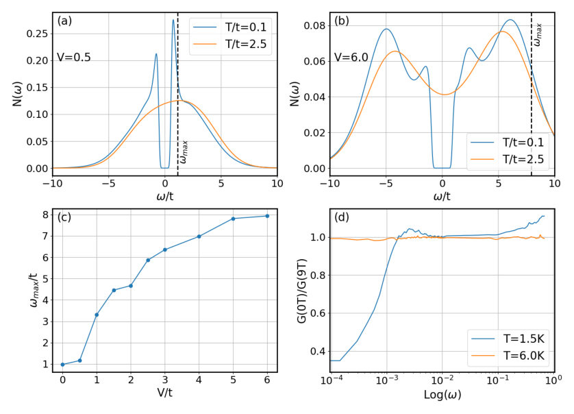
<figcaption class="paper-figure-caption"><b>Fig 3.</b> FIG. 3. Suppression of states into higher energies at large disorder. Panels (a) and (b) depict the calculated density of states (DOS) N(ω) based on DQMC simulations at different disorder levels V = 0.5t and 6t, respectively. For each disorder, N(ω) is shown for low temperature (blue line) and a higher temperature (orange line), where the coherence peaks have been suppressed. Note the relative increase in the density of states at high energies at higher temperatures. (c) Maximal energy (ωmax) defined by the energy cut-off that equalizes the integrated DOS for the low temperature curve below the cut-off to corrresponding area for the high temperature curve. This gives a quantitative measure...</figcaption>
</figure>
<figure class="paper-figure-card">
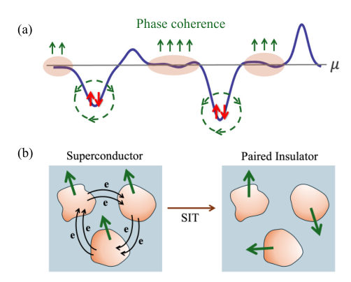
<figcaption class="paper-figure-caption"><b>Fig 4.</b> FIG. 4. Schematic illustration of superconductivity in a highly disordered potential in the insulating phase of the superconduc- tor–insulator transition (SIT). The gray surface represents a spatially random disorder potential, with red spheres denoting bound electron pairs localized in potential minima. Purple regions indicate locally coherent superconducting (SC) islands, with arrows representing the local SC phase within each island. At strong disorder, large potential barriers suppress coupling between islands, preventing global phase coherence across the sample.</figcaption>
</figure>
<figure class="paper-figure-card">
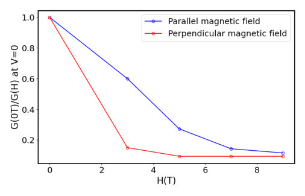
<figcaption class="paper-figure-caption"><b>Fig 5.</b> FIG. 6. Comparison between the effect of parallel vs. perpen- dicular magnetic field on the samples. Zero-bias conductance at H = 0, normalized by its value at field H, for the same sample measured with magnetic field applied parallel (blue) and perpendic- ular (red) to the film. A perpendicular field can introduce vortices, which locally create subgap states and would therefore enhance the zero-bias conductance. Although the low-field responses differ, both orientations converge to essentially the same value at H = 9T. This demonstrates that vortex-induced subgap states cannot account for the observed filling of the gap.</figcaption>
</figure>
</div>

<p><strong>Summary.</strong> This work investigates the pseudogap physics across the superconductor-insulator transition in disordered superconductors using both advanced tunneling spectroscopy and Quantum Monte Carlo simulations. The key finding is that a robust energy gap persists and grows with disorder deep into the insulating state, indicating localized Cooper pairing without global phase coherence. This establishes a crucial link between the high-temperature pseudogap and the insulating gap.</p>
<p><strong>Why it may be interesting.</strong> The findings provide direct evidence for pairing mechanisms persisting deep into an insulating regime, which is highly relevant to understanding unconventional superconductivity in correlated materials.</p>
<details>
<summary>Detailed structure</summary>
<p><strong>Main problem.</strong> To investigate the nature of the pseudogap in the insulating phase of highly disordered superconductors and establish a unified connection between this gap and the superconducting gap above Tc.</p>
<p><strong>Main result.</strong> The single-particle gap survives across the superconductor-insulator transition, increases substantially with disorder, and fills upon increasing temperature rather than closing, confirming a Cooper-pair insulating state.</p>
<p><strong>Method.</strong> Combining ultra-high-resistance planar tunneling spectroscopy on amorphous indium oxide films with Quantum Monte Carlo simulations of the attractive Hubbard model.</p>
<p><strong>Model / system.</strong> The study uses highly disordered thin films undergoing an SIT, modeled by the attractive Hubbard Hamiltonian incorporating random onsite disorder. The system is probed via single-particle excitation spectra.</p>
<p><strong>Key observables.</strong> Single-particle excitation spectrum (DOS), energy gap ($\Delta$), temperature dependence of spectral weight, and coherence peak behavior.</p>
<p><strong>Important parameters / regimes.</strong> Disorder strength ($V$), interaction strength ($U/t$), Temperature ($T$), and the proximity to the Superconductor-Insulator Transition (SIT).</p>
<p><strong>Assumptions / limitations.</strong> The analysis relies on interpreting tunneling conductance ($ ext{d}I/    ext{d}V$) as a measure of the single-particle density of states, and that QMC simulations accurately capture local pairing physics.</p>
<p><strong>Figures summary.</strong> Figures compare DOS measurements showing gap growth with disorder (Fig. 1), demonstrate temperature filling rather than closing of the gap (Fig. 2), and illustrate spectral weight redistribution to high energies (Fig. 3).</p>
<p><strong>Paper structure.</strong> The paper establishes the problem by noting experimental difficulty, presents the theoretical framework using the attractive Hubbard model, details the combined experimental/simulation approach, and concludes by showing quantitative agreement confirming a localized Cooper-pair insulating state.</p>
</details>
<details>
<summary>Abstract</summary>
<p>Disordered thin films undergoing a superconductor-insulator transition provide a controlled setting for studying pseudogap physics in the absence of competing electronic orders. Although theory predicts that local Cooper pairing can survive deep into the insulating phase, direct spectroscopic confirmation has remained experimentally inaccessible because tunneling measurements in highly insulating films require ultra-high-resistance junctions and picoampere current sensitivity. Here we combine ultra-high-resistance planar tunneling spectroscopy on amorphous indium oxide films with quantum Monte Carlo simulations of the attractive Hubbard model to probe the single-particle excitation spectrum deep in the insulating regime. We find striking agreement between experiment and theory: the single-particle gap not only survives across the superconductor-insulator transition, but increases substantially with disorder, reaching values more than twice those observed on the superconducting side. With increasing temperature, the gap fills rather than closes, while coherence peaks are suppressed and spectral weight redistributes to energies far exceeding the gap scale. Our results provide direct quantitative experimental confirmation of the theoretically predicted Cooper-pair insulating state with localized Cooper pairs and establish a unified connection between the pseudogap above $T_c$ and the insulating gap as manifestations of pairing without global phase coherence.</p>
</details>
<p><sub><a href="#top">↑ back to top</a></sub></p>

<p><a id="paper-2608.12586"></a></p>
<h3 id="thermal-hall-tomography-of-chiral-superconductivity-in-rhombohedral-graphene"><a href="http://arxiv.org/abs/2608.12586v1">Thermal Hall tomography of chiral superconductivity in rhombohedral graphene</a></h3>
<p><strong>Authors:</strong> Kumar Ghosh<br>
<strong>Type:</strong> theory · <strong>Category:</strong> other · <strong>PDF:</strong> <a href="https://arxiv.org/pdf/2608.12586v1">https://arxiv.org/pdf/2608.12586v1</a><br>
<strong>Analysis basis:</strong> full PDF text, analyzed in chunks
<strong>Topic relevance:</strong> <code>Keldysh / 2PI / non-Gaussian methods</code> <strong>1/5</strong> · <code>analog quantum simulation</code> <strong>1/5</strong> · <code>driven-dissipative phase transition</code> <strong>1/5</strong></p>
<div class="figure-strip-hint">↔ Scroll figures horizontally</div>
<div class="paper-figures-scroll">
<figure class="paper-figure-card">
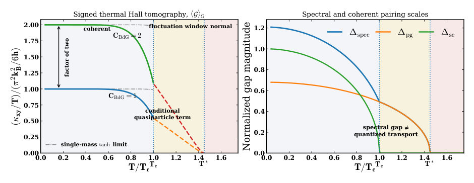
<figcaption class="paper-figure-caption"><b>Fig 1.</b> FIG. 1. Finite-temperature response framework. (a) The coherent quasiparticle contribution obtained from the curvature- resolved transport kernel for CBdG = 1 and 2. The factor-of-two low-temperature separation is universal. The continuation from Tc to a putative pair-formation scale T ∗is conditional on a long-lived, topologically oriented pseudogap and is not the full measured response; chiral fluctuations, vortices and phonons can add non-quantized terms. The curves and T ∗are illustrative. The response is evaluated with the curvature-weighted kernel ⟨G⟩Ωof Eq. (21); the thin grey curve is the single-mass tanh comparison envelope. (b) Two-gap spectral parametrization ∆2 = ∆2 sc + ∆2 pg....</figcaption>
</figure>
<figure class="paper-figure-card">
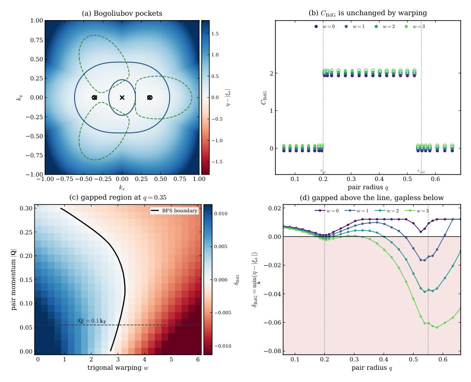
<figcaption class="paper-figure-caption"><b>Fig 2.</b> FIG. 2. Trigonal warping and finite pair momentum preserve CBdG throughout the scanned direct-gap regime, but can destroy quantization by closing the zero-energy gap. (a) η −|ξa| in momentum space at warping w = 4 and |Q| = 0.10, with η = p</figcaption>
</figure>
<figure class="paper-figure-card">
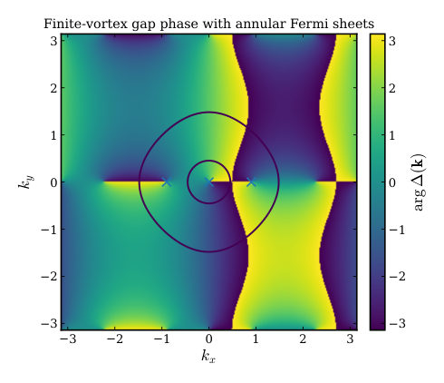
<figcaption class="paper-figure-caption"><b>Fig 3.</b> FIG. 3. Momentum-space tomography made explicit. Gap phase arg ∆(k) for the annular finite-vortex model (colour map) with the annular Fermi sheets overlaid as contours (ξann = 0, solid lines). Crosses mark the three gap zeros: the central vortex at k = 0, which lies in the inner hole and is excluded, and the two finite-momentum vortices at k = (±q, 0), which lie inside the annulus, each carrying wind- ing +1. The occupied-vortex charge Qanalytic = 2 matches the directly computed CBdG = 2. The invariant depends only on which zeros the occupied region encloses, not on how that region decomposes into pockets.</figcaption>
</figure>
<figure class="paper-figure-card">
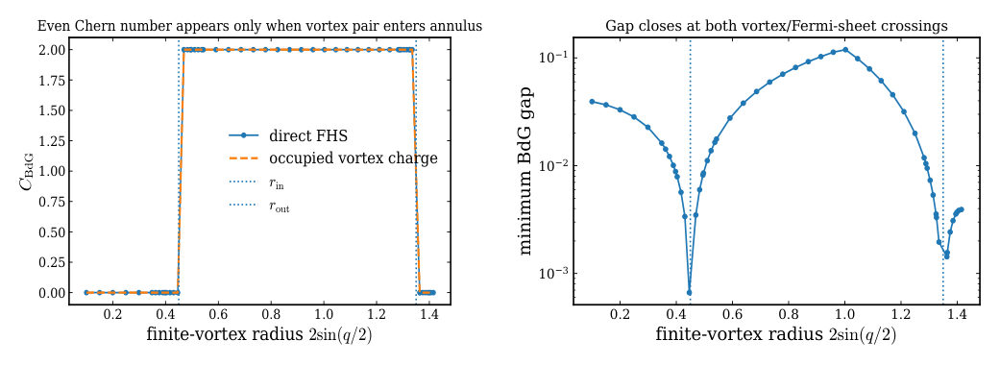
<figcaption class="paper-figure-caption"><b>Fig 4.</b> FIG. 4. Direct FHS validation of the even-Chern annular phase. Vortex-crossing scan over the finite-vortex pair radius 2 sin(q/2) for the annular Fermi sea (rin = 0.45, rout = 1.35, Nk = 201, 54 scan points with refined sampling either side of each crossing). Left: FHS Chern number (solid circles) and analytic occupied-vortex charge Qanalytic (dashed) versus 2 sin(q/2). The integer CBdG switches 0 →2 →0 as the pair crosses the inner and outer Fermi sheets; vertical dotted lines mark rin and rout. The two curves coincide at every point, max |CFHS −Qanalytic| &lt; 10−14, with max |Fplaq| = 2.86 &lt; π. Right: minimum BdG quasiparticle gap on the same axis (log scale), evaluated on the ky = 0 line...</figcaption>
</figure>
<figure class="paper-figure-card">
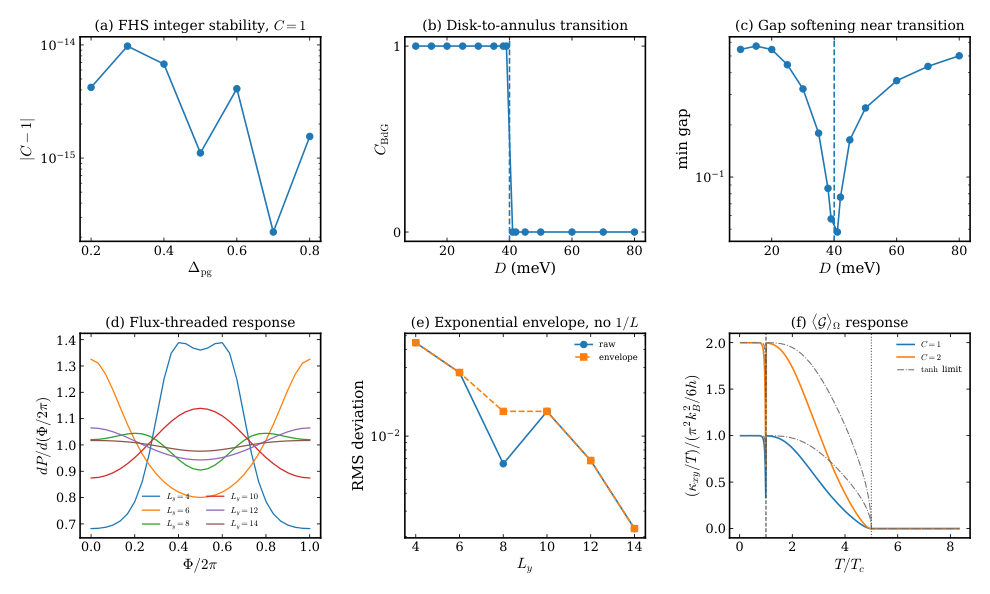
<figcaption class="paper-figure-caption"><b>Fig 5.</b> FIG. 5. Six-panel numerical validation summary. (a) FHS integer stability for the square-lattice p + ip model: |CBdG −1| vs. ∆0, showing machine-precision integrality across the full pairing scan. (b) RHG-effective Lifshitz scan: integer CBdG vs. displacement-field proxy D showing the 1 →0 transition at Dc = 40 meV. (c) Gap softening near the Lifshitz point on a semilog scale, consistent with a topological gap closing at Dc; the discrete D grid brackets the transition rather than landing on it. (d) Flux-threaded differential polarization dP/d(Φ/2π) vs. Φ/2π for cylinders Ly = 4, 6, . . . , 14. (e) Finite-width envelope (raw oscillatory RMS and upper envelope), consistent with the continuum...</figcaption>
</figure>
</div>

<p><strong>Summary.</strong> The paper develops a theoretical framework showing that the thermal Hall conductance of chiral superconductors is quantized and directly measures the system's topological invariant, the Chern number. Using graphene as a model, they predict that $\kappa_{xy}/T$ reads out this integer, offering a powerful diagnostic tool for detecting exotic superconducting phases.</p>
<p><strong>Why it may be interesting.</strong> This work provides a highly specific, experimentally testable prediction ($\kappa_{xy}/T$ quantization) linking abstract topological invariants (Chern numbers) to measurable transport properties in condensed matter systems.</p>
<details>
<summary>Detailed structure</summary>
<p><strong>Main problem.</strong> The primary goal is to measure the Bogoliubov–de Gennes Chern number ($   ext{CBdG}$), an integer characterizing chiral Majorana modes in superconductors, which has proven difficult using traditional magnetic signatures.</p>
<p><strong>Main result.</strong> The low-temperature thermal Hall conductance ($\kappa_{xy}/T$) directly reads out this topological integer $   ext{CBdG}$, providing a robust diagnostic tool for chiral superconductivity. The sign of this plateau reverses when imaging domain walls, confirming the topological nature of the state.</p>
<p><strong>Method.</strong> Theoretical calculations employing the Kubo formula approach on the BdG Hamiltonian are used to predict quantized thermal transport coefficients based on calculated Chern numbers derived from momentum-space winding rules.</p>
<p><strong>Model / system.</strong> The study focuses on chiral superconductivity, modeled using rhombohedral graphene. The theory utilizes the Bogoliubov-de Gennes (BdG) framework, splitting the Hamiltonian into symmetric and antisymmetric parts to isolate physical effects like trigonal warping and finite Cooper pair momentum.</p>
<p><strong>Key observables.</strong> Low-temperature thermal Hall conductance ($\kappa_{xy}/T$), Chern number ($    ext{CBdG}$), Bogoliubov Fermi surface gap ($\delta_{BdG}$).</p>
<p><strong>Important parameters / regimes.</strong> Temperature ($T$), pairing amplitude ($\Delta$), graphene warping strength, and the vortex winding enclosed by occupied regions in momentum space.</p>
<p><strong>Assumptions / limitations.</strong> The quantization of $\kappa_{xy}/T$ is assumed to hold at low temperatures, and the analysis relies on mapping topological invariants (Chern number) onto measurable transport quantities.</p>
<p><strong>Figures summary.</strong> Figures illustrate the finite-temperature response framework showing quantized plateaus for different Chern numbers ($ ext{CBdG}=1, 2$), and show how the thermal Hall conductance is related to the topological invariant.</p>
<p><strong>Paper structure.</strong> The paper establishes the theoretical link between the chiral topology (Chern number) and the measurable low-temperature thermal Hall conductance. It details the Hamiltonian decomposition for graphene, calculates the Chern number using momentum-space winding rules, and predicts the quantized plateau $\kappa_{xy}/T \propto 	ext{CBdG}$.</p>
</details>
<details>
<summary>Abstract</summary>
<p>A chiral superconductor carries chiral Majorana modes along its edges, and a single integer, the Bogoliubov--de Gennes Chern number, counts them. Thirty years of candidate materials have not yielded a measurement of that integer, because the magnetic signatures usually invoked are not topologically protected. Rhombohedral graphene makes the question both urgent and answerable: magnetic imaging resolves rewritable time-reversal-breaking domains inside the superconducting phase, while quantum oscillations reveal a normal state too intricate to reconstruct pocket by pocket. We show that the low-temperature thermal Hall conductance returns the integer directly, with no such reconstruction. For band-projected pairing it equals the pairing-vortex winding enclosed by the occupied regions of momentum space. Splitting the intravalley Hamiltonian into symmetric and antisymmetric parts isolates the trigonal warping and finite Cooper pair momentum of the real material: the antisymmetric part is topologically inert, direct Chern calculations across $525$ parameter points show the invariant preserved, and one inequality marks where a Bogoliubov Fermi surface removes quantization. The plateau $κ_{xy}/T=(π^2k_B^2/6h)\,C_{\rm BdG}$ then reads out the integer, its sign reverses with the imaged domain, a written domain wall should carry $2|C_{\rm BdG}|$ Majorana channels, and the thermometry required already resolves single thermal quanta in encapsulated graphene at millikelvin temperatures.</p>
</details>
<p><sub><a href="#top">↑ back to top</a></sub></p>

<p><a id="paper-2608.12562"></a></p>
<h3 id="diffusion-and-solvation-dynamics-of-ions-in-water-beyond-the-brownian-approximation"><a href="http://arxiv.org/abs/2608.12562v1">Diffusion and Solvation Dynamics of Ions in Water: Beyond the Brownian Approximation</a></h3>
<p><strong>Authors:</strong> Ian C. Bourg, Minh Thê Hoang Ngoc, Thomas R. Underwood, Carlos Vega<br>
<strong>Type:</strong> both · <strong>Category:</strong> statistical mechanics · <strong>PDF:</strong> <a href="https://arxiv.org/pdf/2608.12562v1">https://arxiv.org/pdf/2608.12562v1</a><br>
<strong>Analysis basis:</strong> full PDF text, analyzed in chunks
<strong>Topic relevance:</strong> <code>correlated / nonlocal dissipation</code> <strong>1/5</strong> · <code>scars &amp; prethermalization</code> <strong>1/5</strong></p>
<div class="figure-strip-hint">↔ Scroll figures horizontally</div>
<div class="paper-figures-scroll">
<figure class="paper-figure-card">
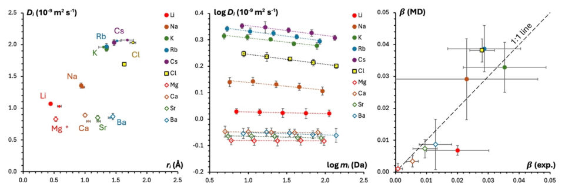
<figcaption class="paper-figure-caption"><b>Fig 1.</b> Figure 1. Ion di9usion in water. (a) Self-diZusion coeZicient 𝐷&quot; (10-9 m2 s-1) as a function of bare ion radius 𝑟&quot; (Å). Bare radii were calculated as 𝑟max minus the radius of a water O atom (1.39 Å), estimated as half of the peak O-O distance in water in our MD simulations. Large symbols show MD simulation predictions obtained in this work, where 𝐷&quot; values are shown for the most abundant isotope of each ion. Small symbols are based on experimental results (Table 1, Table S2). (b) MD simulation predictions of log 𝐷&quot; as a function of log 𝑚&quot; for all ions examined in this work. Error bars show 95% confidence intervals. Dashed lines show linear regressions. For all solutes except Mg, results are...</figcaption>
</figure>
<figure class="paper-figure-card">
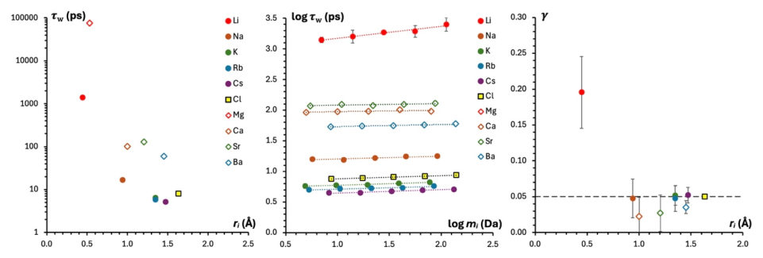
<figcaption class="paper-figure-caption"><b>Fig 2.</b> Figure 2. Residence time 𝝉w (ps) of water molecules in the first hydration shell of ions. (a) 𝜏w values of the most abundant isotope of each ion plotted on a logarithmic scale as a function of bare ion radius 𝑟&quot; (Å). All symbols show MD simulation predictions from this work. (b) MD simulation predictions of log 𝜏w as a function of log 𝑚&quot; for all ions examined in this work. Where not visible, vertical error bars are smaller than the symbol size. Dashed lines show linear regressions. For all solutes except Mg (oZ-scale with log 𝜏w &gt; 3.5), results are statistically consistent with a power-law relation with exponent 𝛾&gt; 0. (c) Predicted 𝛾-values plotted as a function of bare ion radius 𝑟&quot; (Å)....</figcaption>
</figure>
<figure class="paper-figure-card">
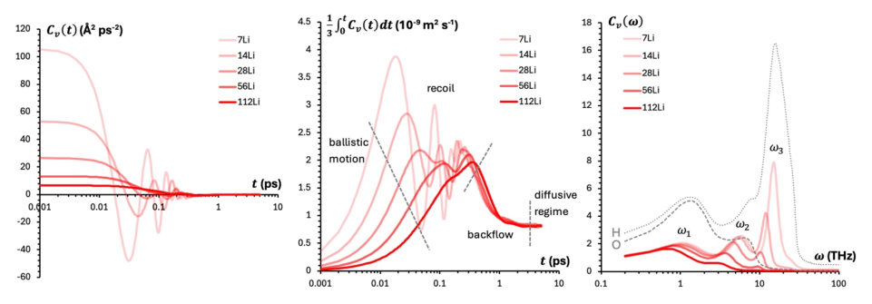
<figcaption class="paper-figure-caption"><b>Fig 3.</b> Figure 3. Velocity autocorrelation function 𝑪𝒗(𝒕) and associated properties in the case of five real or hypothetical isotopes of Li+. (a) 𝐶*(𝑡) plotted as a function of time, with a logarithmic time scale. (b)</figcaption>
</figure>
<figure class="paper-figure-card">
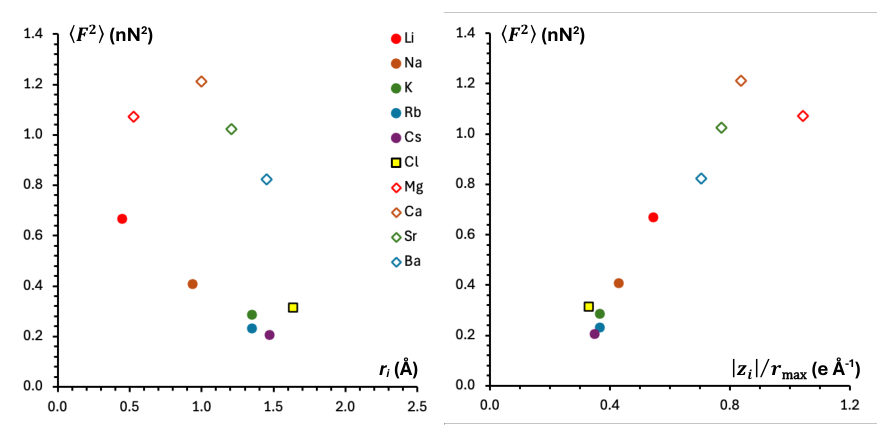
<figcaption class="paper-figure-caption"><b>Fig 4.</b> Figure 4. Mean square force experienced by the ions examined in this work. (a) 〈𝐹-〉 plotted as a function of bare ion radius 𝑟&quot; (Å). (b) 〈𝐹-〉 plotted as a function of |𝑧&quot;|/𝑟max (e Å-1).</figcaption>
</figure>
<figure class="paper-figure-card">
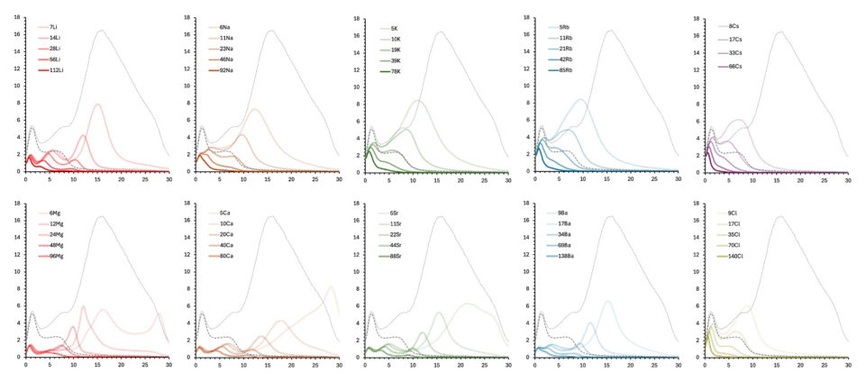
<figcaption class="paper-figure-caption"><b>Fig 5.</b> Figure 5. Power spectra of all ions examined in this work as a function of frequency (THz). (a) Li+. (b) Na+. (c) K+. (d) Rb+. (e) Cs+. (f) Mg2+. (g) Ca2+. (h) Sr2+. (i) Ba2+ (j) Cl-. The power spectra of water O and H atoms are shown as gray dashed and dotted lines on each plot.</figcaption>
</figure>
</div>

<p><strong>Summary.</strong> This work uses molecular dynamics simulations to study how ions interact with water molecules beyond simple diffusion models. By analyzing the isotopic mass dependence of structural and dynamic properties, the authors reveal multiple vibrational 'rattling' frequencies within the solvation shell. This provides a detailed spectroscopic fingerprint for understanding ion-water interactions relevant to biological processes.</p>
<p><strong>Why it may be interesting.</strong> While focused on classical liquid dynamics, the detailed analysis of frequency spectra ($    ext{C}_{#}(\omega)$) and their sensitivity to mass provides insights into quantum mechanical effects (like Zero-Point Energy corrections) within a many-body context, relevant for understanding energy landscapes in open quantum systems.</p>
<details>
<summary>Detailed structure</summary>
<p><strong>Main problem.</strong> The study investigates the coupled dynamics of ions and water molecules within the first hydration shell, aiming to move beyond simplified Brownian approximations.</p>
<p><strong>Main result.</strong> The vibrational power spectra consistently show two or three distinct peaks, indicating multiple 'rattling frequencies' sensitive to isotopic mass, which may serve as signatures for ion solvation processes.</p>
<p><strong>Method.</strong> Molecular Dynamics (MD) simulations are employed to calculate time-dependent correlation functions and spectral densities by systematically varying the isotopic mass of the ions.</p>
<p><strong>Model / system.</strong> The system consists of various alkali and alkaline earth metal ions ($  ext{Li}$ to $   ext{Ba}$) and chloride in bulk liquid water, modeled using established force fields (TIP4P2005/MADRID-2019).</p>
<p><strong>Key observables.</strong> Diffusion coefficients ($D'$), water residence time ($  au_w$), vibrational power spectra ($ ext{C}_{#}(\omega)$), radial distribution functions ($g(r)$), and mean-square force ($\langle\mathbf{F}
angle$).</p>
<p><strong>Important parameters / regimes.</strong> Isotopic mass dependence (varying $ ext{m}_{    ext{ion}}$) is a central parameter, analyzed via power-law scaling ($eta$ and $\gamma$ coefficients).</p>
<p><strong>Assumptions / limitations.</strong> The Born-Oppenheimer approximation is assumed to hold, meaning interatomic potentials are invariant with isotopic mass.</p>
<p><strong>Figures summary.</strong> Figures summarize the dependence of diffusion coefficients ($D'$) on ion radius and mass ($\log D'$ vs. $\log m!$), while tables provide quantitative comparisons of structural parameters ($r_{	ext{max}}, N_O$) and dynamic properties across different computational models and experiments.</p>
<p><strong>Paper structure.</strong> The paper systematically calculates static structure (RDFs, $N_O$) and dynamic transport properties ($D', 	au_w$) for multiple ion species. It then analyzes the isotopic mass dependence of these observables using spectral analysis to extract vibrational signatures.</p>
</details>
<details>
<summary>Abstract</summary>
<p>The coupled dynamics of ions and water molecules in their first hydration shell impact a variety of processes including ion diffusion, selective ion transport in water-filled nanopores, and the kinetics of ion-pairing, ion adsorption, and metal-ligand binding reactions. In this work, we study these coupled dynamics for alkali metals (Li, Na, K, Rb, Cs), alkaline Earth metals (Mg, Ca, Sr, Ba), and chloride through the lens of their dependence on ion isotopic mass. Results are validated against previous measurements of the isotopic mass-dependence of ion diffusion coefficients in water and previous ab initio calculations of ion high-frequency dynamics in water. We find that the vibrational power spectra of ions in water consistently exhibit either two or three peaks, i.e., ions have several rattling frequencies within their solvations shells as previously reported for a subset of the species examined here. These frequencies have different sensititivies to isotopic mass that may serve as signatures of ion solvation processes (such as the tendency of ions to orient their first-shell water molecules) and that also may relate to Hofmeister-like effects including the relative affinity of different metals for ribonucleic acid (RNA).</p>
</details>
<p><sub><a href="#top">↑ back to top</a></sub></p>

<p><a id="paper-2608.12639"></a></p>
<h3 id="dipolar-driven-mean-field-criticality-in-the-ferrimagnet-eumath674mathmnsimath675mathomath676math"><a href="http://arxiv.org/abs/2608.12639v1">Dipolar-driven mean-field criticality in the ferrimagnet Eu$_2$MnSi$_2$O$_7$</a></h3>
<p><strong>Authors:</strong> Masahiro Kawamata, Maxim Avdeev, Yusuke Nambu<br>
<strong>Type:</strong> experiment · <strong>Category:</strong> statistical mechanics · <strong>PDF:</strong> <a href="https://arxiv.org/pdf/2608.12639v1">https://arxiv.org/pdf/2608.12639v1</a><br>
<strong>Analysis basis:</strong> full PDF text, analyzed in chunks
<strong>Topic relevance:</strong> <code>analog quantum simulation</code> <strong>1/5</strong> · <code>non-equilibrium universality</code> <strong>1/5</strong></p>
<div class="figure-strip-hint">↔ Scroll figures horizontally</div>
<div class="paper-figures-scroll">
<figure class="paper-figure-card">
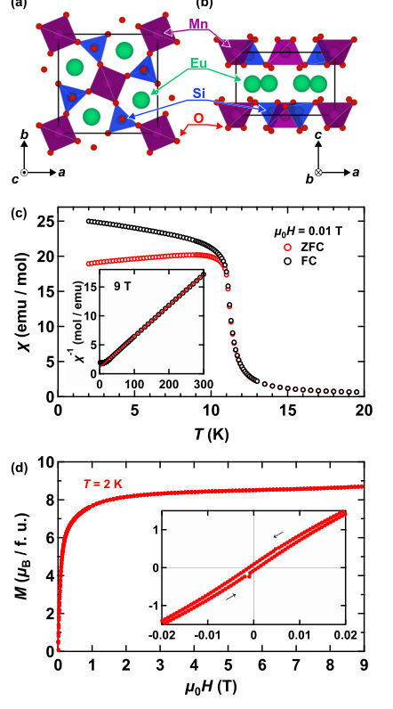
<figcaption class="paper-figure-caption"><b>Fig 1.</b> FIG. 1. Crystal structure of the melilite compound Eu2MnSi2O7 with the space group P¯421m projected onto (a) the ab- and (b) the ac-plane. (c) Temperature dependence of the magnetic susceptibility at µ0H = 0.01 T. Inset: in- verse susceptibility under 9 T with a Curie-Weiss fit (red line). (d) Field dependence of the isothermal magnetization. Inset: low-field region at 2 K showing increasing and decreasing field sweeps.</figcaption>
</figure>
<figure class="paper-figure-card">
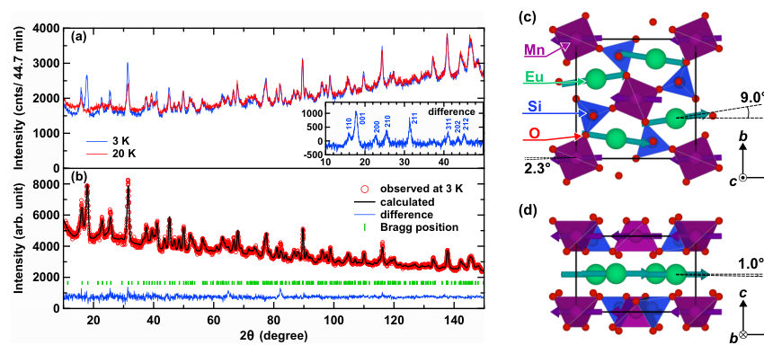
<figcaption class="paper-figure-caption"><b>Fig 2.</b> FIG. 2. (a) Neutron powder diffraction data at 3 and 20 K (λ = 1.622 ˚A). Inset: difference profile between the two temperatures. (b) Rietveld refinement of the 3 K pattern (χ2 = 1.36). Red circles: observed; black line: calculated; blue line: difference; green ticks: Bragg positions of Eu2MnSi2O7. (c,d) Refined magnetic structure with space group P212′ 12′ projected onto (c) the ab plane and (d) the ac plane.</figcaption>
</figure>
<figure class="paper-figure-card">
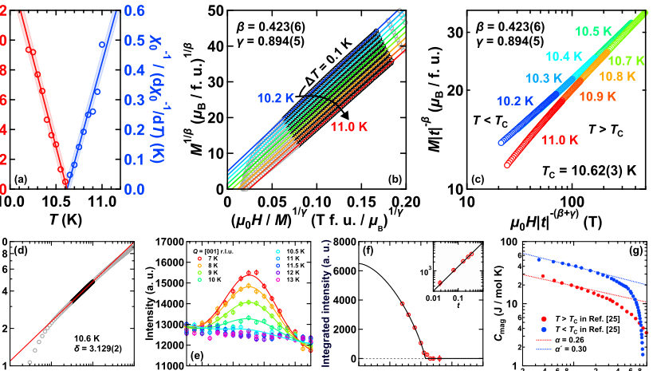
<figcaption class="paper-figure-caption"><b>Fig 3.</b> FIG. 3. (a) Kouvel-Fisher plot for spontaneous magnetization MS(T) and inverse initial susceptibility χ−1 0 . Linear fits are shown as red and blue lines; shaded areas denote uncertainties in β, γ, and TC. (b) Modified Arrott plot for 10.2 ≤T ≤11.0 K and 0.3 ≤µ0H ≤1 T. Black circles: fitted data; grey circles: data outside the fitting range. (c) Scaled magnetization as a function of reduced field above and below TC. (d) Critical isotherm at 10.6 K (dots) with fit (red line) yielding δ = 3.129(2). (e) Temperature dependence of the magnetic reflection at ⃗Q = (0, 0, 1). (f) Integrated intensity at ⃗Q = (0, 0, 1) with fit giving β = 0.41(4). (g) Magnetic specific heat Cmag (solid circles)...</figcaption>
</figure>
<figure class="paper-figure-card">
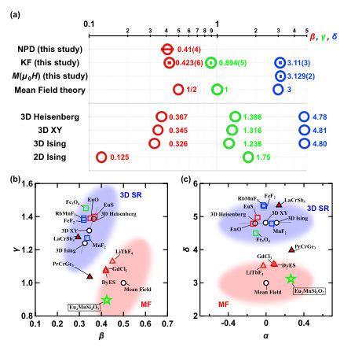
<figcaption class="paper-figure-caption"><b>Fig 4.</b> FIG. 4. (a) Critical exponents β, γ, and δ of Eu2MnSi2O7 compared with model values [41]. (b,c) β vs γ and α vs δ. Open circles: theoretical values for mean- field, 3D-Heisenberg, 3D-XY, and 3D-Ising models [41]. Star: Eu2MnSi2O7 (this work). Squares: ferromagnets (red) [35, 36], ferrimagnets (purple) [37], and antiferromag- nets (blue) [38–40] with SR interactions. Triangles: fer- romagnets with RKKY (filled) and MDD (open) interac- tions [15, 20–22, 42]. Shaded regions denote 3D-SR (red) and MF (blue) universality classes.</figcaption>
</figure>
</div>

<p><strong>Summary.</strong> This study investigates the critical behavior of the ferrimagnet $ ext{Eu}_2   ext{MnSi}_2 ext{O}_7$, demonstrating that its magnetic ordering transition is governed by long-range dipolar interactions. By measuring magnetization and performing neutron diffraction, the authors confirm mean-field critical exponents, establishing this material as a key platform for studying dipolar criticality in insulating magnets.</p>
<p><strong>Why it may be interesting.</strong> The confirmation of mean-field criticality in a complex insulating ferrimagnet provides an experimental realization for testing universality classes beyond simple ferromagnets, which is relevant for understanding phase transitions in many interacting quantum systems.</p>
<details>
<summary>Detailed structure</summary>
<p><strong>Main problem.</strong> To establish mean-field critical behavior driven by long-range dipolar interactions in an insulating ferrimagnet, extending previous findings limited to ferromagnets.</p>
<p><strong>Main result.</strong> The material exhibits mean-field critical exponents ($eta \approx 0.42$, $\gamma \approx 0.9$) confirming that long-range magnetic dipole-dipole interactions govern the asymptotic critical behavior in this ferrimagnet.</p>
<p><strong>Method.</strong> Magnetization measurements, neutron powder diffraction (NPD), and analysis of critical exponents using scaling laws (e.g., Kouvel-Fisher plots).</p>
<p><strong>Model / system.</strong> The physical system is $    ext{Eu}_2   ext{MnSi}_2 ext{O}_7$, a melilite-type ferrimagnet with spin-only Eu$^{2+}$ and Mn$^{2+}$ moments. The critical behavior is modeled by considering the long-range magnetic dipole-dipole (MDD) interactions.</p>
<p><strong>Key observables.</strong> Critical exponents ($eta, \gamma$), magnetic susceptibility ($\chi$), magnetization ($M$), and magnetic reflection intensities from NPD.</p>
<p><strong>Important parameters / regimes.</strong> The system operates in a regime where MDD interactions dominate the critical fluctuations, leading to mean-field universality class behavior.</p>
<p><strong>Assumptions / limitations.</strong> The analysis assumes that dipolar interactions are the dominant long-range force controlling the asymptotic critical exponents, despite the presence of exchange interactions stabilizing the order.</p>
<p><strong>Figures summary.</strong> Figures show temperature dependence of susceptibility ($\chi$), NPD data comparing 3 K and 20 K reflections, and plots used to extract critical exponents using scaling analysis.</p>
<p><strong>Paper structure.</strong> The paper systematically measures magnetic properties across temperatures, analyzes structural refinement via NPD to determine the magnetic space group ($P2_12'12'$), and then applies various thermodynamic/critical analyses (Arrott plot, scaling) to confirm mean-field critical exponents governed by dipolar interactions.</p>
</details>
<details>
<summary>Abstract</summary>
<p>We report mean-field critical behavior in Eu$_2$MnSi$_2$O$_7$, a melilite-type ferrimagnet with spin-only Eu$^{2+}$ and Mn$^{2+}$ moments and negligible orbital contributions. Magnetization measurements combined with neutron powder diffraction reveal critical exponents close to the mean-field values, indicating that long-range dipolar interactions govern the asymptotic critical behavior in this insulating ferrimagnet. The refined magnetic structure, described by the magnetic space group $P2_12_1^\prime2^\prime$, exhibits a tilted ferrimagnetic configuration driven by the Dzyaloshinskii-Moriya interaction, reflecting the noncentrosymmetric nature of the lattice. These results extend the applicability of mean-field theory to complex insulating magnets and establish Eu$_2$MnSi$_2$O$_7$ as a platform for exploring ferrimagnetism and long-range interactions. To our knowledge, this is the first insulating ferrimagnet in which dipolar interactions drive mean-field criticality.</p>
</details>
<p><sub><a href="#top">↑ back to top</a></sub></p>

<p><a id="paper-2608.13551"></a></p>
<h3 id="every-ppt-channel-has-finite-entanglement-breaking-index"><a href="http://arxiv.org/abs/2608.13551v1">Every PPT channel has finite entanglement-breaking index</a></h3>
<p><strong>Authors:</strong> Sang-Jun Park<br>
<strong>Type:</strong> theory · <strong>Category:</strong> quantum information and computing · <strong>PDF:</strong> <a href="https://arxiv.org/pdf/2608.13551v1">https://arxiv.org/pdf/2608.13551v1</a><br>
<strong>Analysis basis:</strong> full PDF text, analyzed in chunks
<strong>Topic relevance:</strong> <code>correlated / nonlocal dissipation</code> <strong>1/5</strong> · <code>quantum measurements</code> <strong>1/5</strong></p>
<div class="figure-strip-hint">↔ Scroll figures horizontally</div>
<div class="paper-figures-scroll">
<figure class="paper-figure-card">
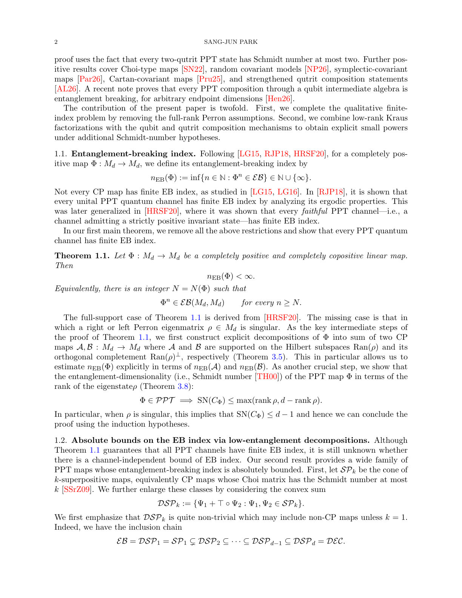
<figcaption class="paper-figure-caption"><b>Fig 1.</b> Low-resolution page preview, page 2</figcaption>
</figure>
<figure class="paper-figure-card">
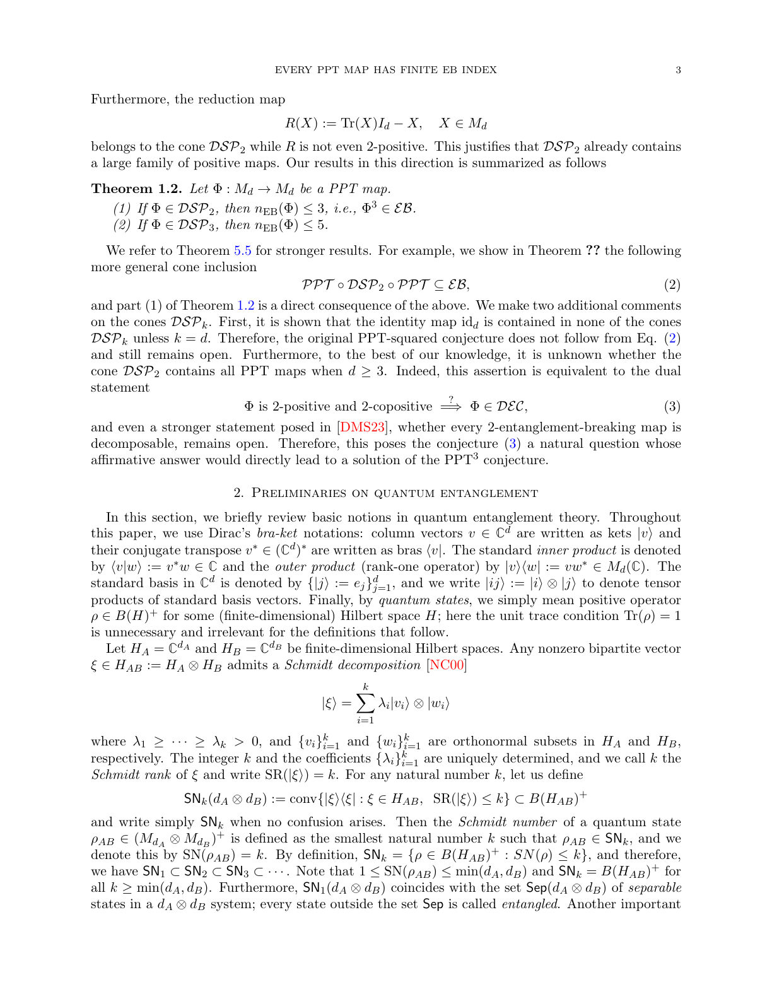
<figcaption class="paper-figure-caption"><b>Fig 2.</b> Low-resolution page preview, page 3</figcaption>
</figure>
<figure class="paper-figure-card">

<figcaption class="paper-figure-caption"><b>Fig 3.</b> Low-resolution page preview, page 4</figcaption>
</figure>
<figure class="paper-figure-card">

<figcaption class="paper-figure-caption"><b>Fig 4.</b> Low-resolution page preview, page 5</figcaption>
</figure>
<figure class="paper-figure-card">

<figcaption class="paper-figure-caption"><b>Fig 5.</b> Low-resolution page preview, page 6</figcaption>
</figure>
</div>

<p><strong>Summary.</strong> This paper proves a major result showing that every PPT quantum channel must eventually become entanglement-breaking. By establishing the finite entanglement-breaking index for all such channels, it strengthens conjectures about the structure of quantum operations. The methods involve advanced linear algebra applied to map theory, providing deep insights into how entanglement is lost over repeated applications of physical processes.</p>
<p><strong>Why it may be interesting.</strong> This work provides fundamental structural results about quantum operations (channels) that are crucial for understanding decoherence, channel capacity, and entanglement dynamics in open quantum systems.</p>
<details>
<summary>Detailed structure</summary>
<p><strong>Main problem.</strong> The central problem is proving that every Positive Partial Transpose (PPT) quantum channel eventually becomes entanglement-breaking, establishing the eventual entanglement-breaking property for this class of channels.</p>
<p><strong>Main result.</strong> The authors prove that every PPT linear map acting on a quantum system has a finite entanglement-breaking index ($ ext{nEB}(\Phi) &lt; \infty$).</p>
<p><strong>Method.</strong> The proof utilizes inductive arguments, decomposing the channel $\Phi$ based on spectral properties (Perron eigenmatrices) and relating the EB index to bounds derived from specific subclasses of maps like $k$-superpositive maps.</p>
<p><strong>Model / system.</strong> The study concerns linear maps $\Phi: M_d(\mathbb{C}) 	o M_d(\mathbb{C})$ acting on quantum systems, characterized by their Choi matrix. Key concepts include PPT and Entanglement-Breaking (EB) channels.</p>
<p><strong>Key observables.</strong> Entanglement-breaking index ($ ext{nEB}(\Phi)$), the structure of the Choi matrix $C\Phi$, and spectral properties like the Perron radius.</p>
<p><strong>Important parameters / regimes.</strong> The dimension $d$ of the system, and indices related to map composition (e.g., $    ext{DSP}_2,     ext{DSP}_3$).</p>
<p><strong>Assumptions / limitations.</strong> The analysis relies on structural decompositions of the channel into components supported by projections derived from eigenvalue problems.</p>
<p><strong>Paper structure.</strong> The paper builds upon defining PPT and EB maps, establishing relationships between different classes of positive maps ($   ext{SP}_k$), and culminates in proving Theorem 1.1 via induction on the dimension $d$.</p>
</details>
<details>
<summary>Abstract</summary>
<p>We prove that every PPT linear map has finite entanglement-breaking index, thereby establishing the eventual entanglement-breaking property of PPT channels in full generality. Furthermore, by utilizing completely positive maps with low entanglement dimensionality, we show that a large family of PPT maps, which strictly containing the class of 2-superpositive maps, has entanglement-breaking index bounded above by 3, uniformly in the dimension. In particular, these results provide strong evidence that the PPT-cubed conjecture may hold in full generality.</p>
</details>
<p><sub><a href="#top">↑ back to top</a></sub></p>

<p><a id="paper-2608.13099"></a></p>
<h3 id="formal-verification-of-quantum-ancilla-safety"><a href="http://arxiv.org/abs/2608.13099v1">Formal Verification of Quantum Ancilla Safety</a></h3>
<p><strong>Authors:</strong> Jiqi Li, Jingyi Mei, Wang Fang, Ji Guan<br>
<strong>Type:</strong> theory · <strong>Category:</strong> quantum information and computing · <strong>PDF:</strong> <a href="https://arxiv.org/pdf/2608.13099v1">https://arxiv.org/pdf/2608.13099v1</a><br>
<strong>Analysis basis:</strong> full PDF text, analyzed in chunks
<strong>Topic relevance:</strong> <code>correlated / nonlocal dissipation</code> <strong>1/5</strong> · <code>quantum measurements</code> <strong>1/5</strong></p>
<div class="figure-strip-hint">↔ Scroll figures horizontally</div>
<div class="paper-figures-scroll">
<figure class="paper-figure-card">

<figcaption class="paper-figure-caption"><b>Fig 1.</b> Fig. 1: Bridge-GHZ circuits [12] with a shared ancilla qa: (left) clean-ancilla ver- sion; (right) dirty-ancilla version. See detail in Appendix A.1.</figcaption>
</figure>
<figure class="paper-figure-card">

<figcaption class="paper-figure-caption"><b>Fig 2.</b> Fig. 3: Quokka-Sharp and QCEC performance on MCX and Grover circuits.</figcaption>
</figure>
</div>

<p><strong>Summary.</strong> This paper introduces a comprehensive verification-and-repair framework to mathematically guarantee 'ancilla safety' in quantum circuits. It achieves this by reducing complex, hard-to-verify dirty ancilla checks into manageable algebraic commutativity tests involving Pauli operators. The resulting tool is efficient, scalable, and provides actionable diagnosis and repair routines for local faults.</p>
<p><strong>Why it may be interesting.</strong> While focused on computation theory, the rigorous mathematical tools developed for subspace preservation and error characterization are highly relevant to understanding decoherence and state preparation fidelity in physical quantum hardware implementations.</p>
<details>
<summary>Detailed structure</summary>
<p><strong>Main problem.</strong> The core problem is formally verifying 'ancilla safety'—ensuring temporary ancilla qubits are restored to a known state after complex quantum operations, especially when they start in unknown ('dirty') states.</p>
<p><strong>Main result.</strong> The authors propose an efficient end-to-end framework that reduces dirty safety checks to independent clean safety checks, which are further reduced to algebraic commutativity conditions involving Pauli operators.</p>
<p><strong>Method.</strong> They develop a two-step reduction strategy: first decomposing the problem into multiple clean ancilla checks, and then mapping each check onto checking commutation relations $[U, Q] = 0$ using specialized reflection operators $Q$.</p>
<p><strong>Model / system.</strong> The model is general quantum circuits operating on data qubits ($W$) and ancillary qubits ($A$). Safety definitions distinguish between 'clean' (restoring to $|0
angle^{\otimes m}$) and 'dirty' (restoring regardless of initial state $|\varphi
angle_A$).</p>
<p><strong>Key observables.</strong> The primary diagnostics are the commutator checks $[U, Q] = 0$, and failure modes are classified as LogicError or PhaseError.</p>
<p><strong>Important parameters / regimes.</strong> Scalability is demonstrated up to thousands of qubits; the analysis involves unitary transformations $U$ acting on composite Hilbert spaces $\mathcal{H}_W \otimes \mathcal{H}_A$.</p>
<p><strong>Assumptions / limitations.</strong> The framework assumes purely unitary circuits without mid-circuit measurements or classical feed-forward for its core theorems. Repair routines are limited to separable error cases.</p>
<p><strong>Figures summary.</strong> Not specified, but the notes reference Figure 1 illustrating clean vs. dirty ancilla usage and Table 3 comparing verification efficiency across benchmarks like Grover's algorithm.</p>
<p><strong>Paper structure.</strong> The paper builds from defining the physical problem (clean/dirty safety) to establishing theoretical equivalences via lemmas (subspace invariance $\iff$ commutation), culminating in a practical, efficient framework for diagnosis and repair using algebraic checks.</p>
</details>
<details>
<summary>Abstract</summary>
<p>Ensuring ancilla safety is a critical correctness requirement for quantum compilation, since ancilla qubits are routinely introduced to implement complex operations with fewer gates and reduced depth. However, formally verifying this property is computationally hard due to state-space explosion in the number of qubits, particularly for dirty ancillae, which carry unknown initial states and must be restored after use. We propose an end-to-end verification-and-repair framework that rigorously addresses both clean and dirty ancilla safety. Our core contribution is a two-step reduction strategy: we first prove that verifying an $m$-qubit dirty ancilla register decomposes into $2m$ independent clean ancilla safety checks; subsequently, we reduce each clean ancilla safety instance to an algebraic commutativity check against Pauli-$Z$ and Pauli-$X$ operators. This approach yields an efficient and naturally parallel verifier and enables actionable diagnosis by classifying violations into logic errors and phase errors. Leveraging this diagnosis, we further design lightweight repair routines that append local single-qubit rotations to eliminate a broad class of local ancilla faults. We implement the full pipeline in a prototype tool using a dual-backend architecture combining decision diagrams and weighted model counting, and validate it on diverse circuits ranging from arithmetic benchmarks to Grover's algorithm. Our experiments demonstrate scalability to thousands of qubits and show that the proposed repairs effectively improve ancilla safety while preserving circuit functionality.</p>
</details>
<p><sub><a href="#top">↑ back to top</a></sub></p>

<p><a id="paper-2608.12459"></a></p>
<h3 id="revisiting-magnon-bound-states-ferro-antiferromagnetic-math715math-square-lattice-model"><a href="http://arxiv.org/abs/2608.12459v1">Revisiting magnon bound states: ferro-antiferromagnetic $J_1\!-\!J_2$ square-lattice model</a></h3>
<p><strong>Authors:</strong> Cesar A. Gallegos, A. L. Chernyshev<br>
<strong>Type:</strong> theory · <strong>Category:</strong> strongly correlated electrons · <strong>PDF:</strong> <a href="https://arxiv.org/pdf/2608.12459v1">https://arxiv.org/pdf/2608.12459v1</a><br>
<strong>Analysis basis:</strong> full PDF text, analyzed in chunks
<strong>Topic relevance:</strong> <code>Keldysh / 2PI / non-Gaussian methods</code> <strong>1/5</strong> · <code>analog quantum simulation</code> <strong>1/5</strong></p>
<div class="figure-strip-hint">↔ Scroll figures horizontally</div>
<div class="paper-figures-scroll">
<figure class="paper-figure-card">

<figcaption class="paper-figure-caption"><b>Fig 1.</b> FIG. 1. Red and blue solid lines: the energies of the BSs in the S =1/2 square-lattice Heisenberg ferromagnet vs pair momentum K along the high-symmetry ΓMXΓ path in the BZ; see the inset, Γ = (0, 0), M= (π, π), and X= (π, 0). The shaded region is the two-magnon continuum energy relative to its minimum; the black solid line is its boundary. Arrows point to the regions of the super-exponentially shallow s-wave BS near the Γ point, the zero-dimensional (0D) degenerate BSs at the M point, and the 1D BSs along the MX line discussed below. Some of the binding energies are below numerical detectability for a significant portion of the ΓMXΓ path, with the arrows along the horizontal axis that...</figcaption>
</figure>
<figure class="paper-figure-card">

<figcaption class="paper-figure-caption"><b>Fig 2.</b> FIG. 2. Intensity plots of the (a) generalized s-wave and (b) d-wave lattice partial waves Rs(q) and Rd(q) in momen- tum space; see Eqs. (40). Nodal lines and the high-symmetry points in the BZ are indicated.</figcaption>
</figure>
<figure class="paper-figure-card">

<figcaption class="paper-figure-caption"><b>Fig 3.</b> FIG. 3. The two-magnon continuum energy, EK(p)=ε K</figcaption>
</figure>
<figure class="paper-figure-card">

<figcaption class="paper-figure-caption"><b>Fig 4.</b> FIG. 4. Intensity plots of the (a) generalized sxy and (b) dxy lattice partial waves, Rsxy(q) and Rdxy(q), respectively, in momentum space; see Eq. (67). Nodal lines and the high- symmetry points in the BZ are indicated.</figcaption>
</figure>
<figure class="paper-figure-card">

<figcaption class="paper-figure-caption"><b>Fig 5.</b> FIG. 6. Binding energies ∆for the S = 1/2 J1–J2 model at the Γ = (0, 0), M= (π, π), and X= (π, 0) points as functions of J2. The arrows show J2 values at which the BSs at the M and X points vanish, and the onset of a paired d-wave ground state at the Γ point; the filled symbols are J2’s in Fig. 5.</figcaption>
</figure>
</div>

<p><strong>Summary.</strong> This work provides a comprehensive analysis of magnon bound states in the J1-J2 square-lattice model by solving the two-magnon Schrödinger equation using multiple rigorous methods. The key finding is that the introduction of the J2 coupling stabilizes a d-wave symmetric ground state, offering a clear physical picture for magnon pairing evolution controlled by effective dimensionality changes.</p>
<p><strong>Why it may be interesting.</strong> The rigorous comparison between different theoretical approaches (exact vs. perturbative) to solve many-body quantum problems in magnetic materials provides a robust framework for understanding collective excitations beyond simple mean-field treatments, which is relevant to strongly correlated electron physics.</p>
<details>
<summary>Detailed structure</summary>
<p><strong>Main problem.</strong> The paper investigates magnon bound states (BSs) and pairing mechanisms in quantum magnets, aiming to reconcile theoretical predictions with observed behavior.</p>
<p><strong>Main result.</strong> Introducing the J2 term stabilizes a d-wave symmetric BS as the ground state, showing that the physics is governed by effective dimensional reduction/enhancement rather than being fundamentally different from continuum problems.</p>
<p><strong>Method.</strong> The study employs advanced theoretical techniques, including deriving and comparing results from non-orthogonal spin-flip wavefunctions and the 1/S-expansion of the bosonized Hamiltonian to solve the two-magnon Schrödinger equation.</p>
<p><strong>Model / system.</strong> The system is the Heisenberg S=1/2 square-lattice J1-J2 ferro-antiferromagnetic (FM-AFM) model. The analysis focuses on the two-magnon bound state problem governed by a derived Schrödinger equation in momentum space.</p>
<p><strong>Key observables.</strong> Binding energies of the two-magnon BSs, symmetry of the ground state BS (d-wave), and phase boundaries for BS existence as a function of pair momentum K and model parameters J2.</p>
<p><strong>Important parameters / regimes.</strong> The exchange couplings J1 and J2, the spin quantum number S=1/2, and the pair momentum vector K across the Brillouin zone.</p>
<p><strong>Assumptions / limitations.</strong> The $1/S$-expansion is used for fluctuating ground states (AFM), while the non-orthogonal basis approach provides an exact result for the fully polarized FM-like model; care must be taken regarding non-orthogonality corrections in pairing problems.</p>
<p><strong>Figures summary.</strong> Figure 17 illustrates threshold boundaries ($J_{2,c}$ vs $K_x$) showing distinct existence regions for d-wave BSs originating from different high-symmetry points ($\Gamma$ and M).</p>
<p><strong>Paper structure.</strong> The paper systematically analyzes the two-magnon bound state problem by deriving the governing Schrödinger equation using multiple formalisms. It then studies how the inclusion of J2 modifies the band structure, leading to the stabilization of a d-wave BS, and finally calculates critical parameters like $J_{c2}^2$ where this binding occurs.</p>
</details>
<details>
<summary>Abstract</summary>
<p>A comprehensive analysis of pairing and bound states of magnons in the Heisenberg $S\!=\!1/2$ square-lattice $J_1\!-\!J_2$ ferro-antiferromagnetic model is presented. We highlight the similarities and differences between the bound states of spin flips on a lattice and those of particles in the continuum. Magnon bound states at finite pair momentum are studied throughout the Brillouin zone and a convenient lattice partial-wave nomenclature is advocated. The mechanisms of enhanced stability or fragility of these bound states for the high-symmetry pair momenta are identified and quantified as relating to the effective dimensional reduction or enhancement, respectively. These effects are also shown to control the evolution of the bound states with the model parameters, providing a transparent framework for understanding magnon pairing in a more general setting. A method to determine the bound state phase boundaries is presented.</p>
</details>
<p><sub><a href="#top">↑ back to top</a></sub></p>

<p><a id="paper-2608.13065"></a></p>
<h3 id="topology-and-quantum-spin-classical-spin-crossover-of-the-gapped-kondo-effect"><a href="http://arxiv.org/abs/2608.13065v1">Topology and Quantum-Spin-Classical-Spin Crossover of the Gapped Kondo Effect</a></h3>
<p><strong>Authors:</strong> David Krüger, Michael Potthoff<br>
<strong>Type:</strong> theory · <strong>Category:</strong> strongly correlated electrons · <strong>PDF:</strong> <a href="https://arxiv.org/pdf/2608.13065v1">https://arxiv.org/pdf/2608.13065v1</a><br>
<strong>Analysis basis:</strong> full PDF text, analyzed in chunks
<strong>Topic relevance:</strong> <code>analog quantum simulation</code> <strong>1/5</strong> · <code>quantum measurements</code> <strong>1/5</strong></p>
<div class="figure-strip-hint">↔ Scroll figures horizontally</div>
<div class="paper-figures-scroll">
<figure class="paper-figure-card">

<figcaption class="paper-figure-caption"><b>Fig 1.</b> FIG. 1. m-J ground-state phase diagram. White line: dis- continuous phase transition. Background color code: local Kondo correlation ⟨ˆs · ˆS⟩≡⟨ˆsi0A · ˆS⟩. Light green symbol color: ∆N = +1, dark green: ∆N = 0. Symbol form in- dicates the ground-state degeneracy, doublet: cross, singlet: circle. Calculations for N = 50 + ∆N.</figcaption>
</figure>
<figure class="paper-figure-card">

<figcaption class="paper-figure-caption"><b>Fig 2.</b> FIG. 2. Top: J-dependent difference between the energies of the lowest excited states and the ground state, ∆En(J) ≡ En(J)−E0(J). Dark green: particle number ∆N = 0 relative to the J = 0 ground state. Light green: ∆N = 1. Bottom: J- spectral flow of the low-frequency poles of the single-electron Green’s function ⟨⟨c; c†⟩⟩. Note that the bulk-band gap is ∆= 2 for both m = 1 and m = 3. Gray area: bulk continuum of single-particle excitations.</figcaption>
</figure>
<figure class="paper-figure-card">

<figcaption class="paper-figure-caption"><b>Fig 3.</b> FIG. 4. B-J phase diagrams interpolating between quantum (B →0) and classical (B →∞) spin impurity models. Left: m = 1, right: m = 3. Symbol color indicates ∆N, green: ∆N = 0, light-blue: ∆N = +1. Note the log scale.</figcaption>
</figure>
<figure class="paper-figure-card">

<figcaption class="paper-figure-caption"><b>Fig 4.</b> FIG. 3. Left: m-J phase diagram for a classical spin S of length S = 1/2. Background color code: ⟨ˆs · S⟩= ⟨ˆs⟩· S. Symbol color indicates ∆N, green: ∆N = 0, light-blue: ∆N = +1. Calculations for N = 50 + ∆N. Right: J-spectral flow of in-gap states for m = 1 (top) and m = 3 (bottom). Bulk continuum: gray background.</figcaption>
</figure>
<figure class="paper-figure-card">

<figcaption class="paper-figure-caption"><b>Fig 5.</b> Figure 4 shows the dependence of the critical coupling on B (white lines) for two different mass parameters, m = 1 (left) and m = 3 (right), as obtained numerically. In both cases, we see that the quantum-spin C(B) = −1 phase for J &lt; JK(m) continuously connects with the classical-spin C(S) = 0 phase for J &lt; Jc(m) and, for strong J, the quantum C(B) = 0 phase connects to the classical C(S) = 1 phase. Therefore, both the quantum- spin and the classical-spin phase diagrams are identical up to continuous deformations, though the quantitative differences are significant.</figcaption>
</figure>
</div>

<p><strong>Summary.</strong> This work theoretically investigates the gapped Kondo effect, mapping out its complex phase diagram by analyzing how quantum and classical spin descriptions connect. The key finding is that these transitions are robustly characterized by changes in multiple topological invariants, such as Chern numbers. This provides a powerful topological lens for understanding strongly correlated impurity physics.</p>
<p><strong>Why it may be interesting.</strong> The explicit use of topological invariants (Chern numbers) to characterize a many-body phase transition in an impurity model provides a powerful theoretical tool for understanding correlated electron physics beyond simple energy gap analysis.</p>
<details>
<summary>Detailed structure</summary>
<p><strong>Main problem.</strong> The study investigates the gapped Kondo effect, focusing on its topological characterization and the continuous interpolation between quantum-spin and classical-spin impurity coupling regimes.</p>
<p><strong>Main result.</strong> The Kondo transition is characterized by changes in multiple topological invariants (Chern numbers), demonstrating a continuous connection between the quantum and classical phase diagrams.</p>
<p><strong>Method.</strong> Numerical investigation using Lanczos transformation combined with a self-consistent configuration-interaction (RASCI) scheme to solve the many-body Hamiltonian.</p>
<p><strong>Model / system.</strong> The model involves an impurity spin coupled via an antiferromagnetic exchange interaction to a conduction-electron system described by the gapped Qi-Wu-Zhang (QWZ) model, which serves as a prototypical 2D insulator.</p>
<p><strong>Key observables.</strong> Topological invariants including conventional momentum-space Chern number $C(\mathbf{k})$, B-space Chern number $C(B)$, and S-space Chern number $C(S)$; Kondo correlation $\langle\hat{s} \cdot \hat{S}
angle$.</p>
<p><strong>Important parameters / regimes.</strong> Kondo coupling strength ($J$), gap magnitude ($\Delta$), fictitious magnetic field strength ($B$), and impurity spin quantum number ($S$).</p>
<p><strong>Assumptions / limitations.</strong> The classical-spin limit is treated as an approximation, and the method relies on the electronic structure gap exceeding finite-size gaps for results to be robust.</p>
<p><strong>Figures summary.</strong> Figures illustrate phase diagrams mapping critical couplings ($J_K(m)$ vs $m$) separating screened/unscreened states for both quantum ($\hat{S}$) and classical ($S$) spin limits, alongside spectral flow analysis.</p>
<p><strong>Paper structure.</strong> The paper systematically analyzes the gapped Kondo effect using numerical methods, first establishing the topological characterization via Chern numbers, then demonstrating the continuous interpolation between quantum and classical regimes, and finally extending the study to overscreened two-channel effects.</p>
</details>
<details>
<summary>Abstract</summary>
<p>The gapped Kondo effect describes the screening of an $S=\frac12$ impurity spin locally coupled via an antiferromagnetic exchange interaction to a conduction-electron system exhibiting a finite hard gap. Using a combination of a Lanczos transformation and a self-consistent configuration-interaction scheme, we numerically investigate the local phase diagram. Furthermore, we show that the different phases can be characterized by several topological invariants: the conventional momentum-space Chern number of the underlying two-dimensional host system, corresponding to a Chern insulator; the B-space Chern number, defined by coupling the impurity spin to a fictitious local magnetic field $\boldsymbol B$, in the limit $B \to 0$; and the S-space Chern number, defined for a classical impurity spin, i.e., a vector of fixed length. The classical-spin limit is obtained for $B \to \infty$. By varying the field strength, we can therefore continuously interpolate between quantum-impurity-spin and classical-impurity-spin Hamiltonians and investigate whether the corresponding phase diagrams are likewise continuously connected. The gapped underscreened Kondo effect is studied for an impurity spin $S>\frac12$ as well as in the classical-spin limit approached via $B \to \infty$ or $S \to \infty$. Different variants of scattering theory are employed to interpret the resulting phases. Finally, the gapped two-channel overscreened Kondo effect, realized by coupling a quantum impurity spin equally to the local electron spins of both orbitals within a unit cell, is shown to be characterized by spontaneous particle-hole symmetry breaking. This leads to a highly nontrivial quantum-classical phase diagram.</p>
</details>
<p><sub><a href="#top">↑ back to top</a></sub></p>

<p><a id="paper-2608.12785"></a></p>
<h3 id="a-minimum-cardinality-genuinely-unextendible-product-basis-in-three-qutrits"><a href="http://arxiv.org/abs/2608.12785v1">A Minimum-Cardinality Genuinely Unextendible Product Basis in Three Qutrits</a></h3>
<p><strong>Authors:</strong> Fei Shi, Ge Bai, Xiande Zhang, Qi Zhao, Lvzhou Li<br>
<strong>Type:</strong> theory · <strong>Category:</strong> quantum information and computing · <strong>PDF:</strong> <a href="https://arxiv.org/pdf/2608.12785v1">https://arxiv.org/pdf/2608.12785v1</a><br>
<strong>Analysis basis:</strong> full PDF text, analyzed in chunks
<strong>Topic relevance:</strong> <code>quantum measurements</code> <strong>1/5</strong></p>
<div class="figure-strip-hint">↔ Scroll figures horizontally</div>
<div class="paper-figures-scroll">
<figure class="paper-figure-card">

<figcaption class="paper-figure-caption"><b>Fig 1.</b> FIG. 1. Local orthogonality graphs of the construction. Vertex i labels the i-th product state in Table I, and an edge (i, j) in GX indicates that the corresponding local vectors at party X are orthogonal. All three panels use the same circular ordering of the vertices, and their edge sets together cover K14. The graphs GA and GB are isomorphic under the permutation π defined in Eq. (2).</figcaption>
</figure>
</div>

<p><strong>Summary.</strong> This paper resolves the open problem regarding the minimum size of a Genuinely Unextendible Product Basis (GUPB) in three-qutrit systems. The authors construct an explicit basis of cardinality 14, proving this is the minimum possible size for this system. They also demonstrate that the associated projector exhibits strong quantum nonlocality while remaining bound entangled across all bipartitions.</p>
<p><strong>Why it may be interesting.</strong> The concept of GUPBs is central to understanding quantum nonlocality and separability criteria. Demonstrating a concrete example that exhibits strong nonlocality without violating PPT conditions provides deep insight into multipartite quantum correlations beyond simple entanglement measures.</p>
<details>
<summary>Detailed structure</summary>
<p><strong>Main problem.</strong> The authors addressed the open question of determining the minimum cardinality required for a Genuinely Unextendible Product Basis (GUPB) in tripartite quantum systems.</p>
<p><strong>Main result.</strong> They constructed an explicit three-qutrit GUPB with a minimum cardinality of fourteen, proving this is the smallest possible size for such a basis in this setting.</p>
<p><strong>Method.</strong> The proof combines graph theory analysis (using orthogonality graphs) with rigorous mathematical constructions and computer-assisted searches to establish both existence and minimality bounds.</p>
<p><strong>Model / system.</strong> The study focuses on three-qutrit systems ($\mathbb{C}^3 \otimes \mathbb{C}^3 \otimes \mathbb{C}^3$) in quantum information theory, generalizing the results to arbitrary local dimensions $d_A, d_B, d_C$.</p>
<p><strong>Key observables.</strong> The constructed basis exhibits 'strong quantum nonlocality without entanglement,' and the projector onto its orthogonal complement is shown to be positive under partial transposition (PPT) and bound entangled across every bipartition.</p>
<p><strong>Important parameters / regimes.</strong> Minimum cardinality = 14 for the three-qutrit case; local dimensions $d \ge 3$.</p>
<p><strong>Assumptions / limitations.</strong> The proof relies on Lemma 1, which provides necessary and sufficient conditions relating the UPB property to rank conditions on local vector subsets.</p>
<p><strong>Figures summary.</strong> Figure 1 illustrates the local orthogonality graphs ($G_A, G_B, G_C$) whose union covers $K_{14}$, while Tables I-IV detail the specific vectors, determinant certificates, and index sets used in the construction and verification process.</p>
<p><strong>Paper structure.</strong> The paper establishes the problem definition (GUPB), uses graph theory to constrain possible bases, constructs the explicit basis of size 14 for three qutrits, proves its minimality, generalizes the construction to higher dimensions, and finally analyzes the entanglement properties of the orthogonal complement.</p>
</details>
<details>
<summary>Abstract</summary>
<p>It has remained an open question whether a genuinely unextendible product basis (GUPB) exists. We resolve this problem by constructing an explicit three-qutrit GUPB of cardinality fourteen in the smallest tripartite Hilbert space in which a GUPB can exist. Together with the nonexistence of three-qutrit GUPBs of cardinality less than fourteen, our construction proves that fourteen is the minimum cardinality. A padding procedure further extends the construction to all tripartite systems whose local dimensions are at least three. As applications, the normalized projector onto the thirteen-dimensional orthogonal complement of the three-qutrit GUPB is positive under partial transposition and bound entangled across every bipartition, while the GUPB exhibits strong quantum nonlocality without entanglement.</p>
</details>
<p><sub><a href="#top">↑ back to top</a></sub></p>

<p><a id="paper-2608.12936"></a></p>
<h3 id="autoqureo-a-framework-for-automated-quantum-resource-estimation-and-optimization"><a href="http://arxiv.org/abs/2608.12936v1">AutoQuREO: A Framework for Automated Quantum Resource Estimation and Optimization</a></h3>
<p><strong>Authors:</strong> Harshkumar Oza, Aritra Sarkar, Syed Naqi Abbas, Rahul Bhowmick, Aryan Prakash, Prateek P Kulkarni, Krishna Kumar Sabapathy<br>
<strong>Type:</strong> theory · <strong>Category:</strong> quantum information and computing · <strong>PDF:</strong> <a href="https://arxiv.org/pdf/2608.12936v1">https://arxiv.org/pdf/2608.12936v1</a><br>
<strong>Analysis basis:</strong> full PDF text, analyzed in chunks
<strong>Topic relevance:</strong> <code>quantum measurements</code> <strong>1/5</strong></p>
<div class="figure-strip-hint">↔ Scroll figures horizontally</div>
<div class="paper-figures-scroll">
<figure class="paper-figure-card">

<figcaption class="paper-figure-caption"><b>Fig 1.</b> Figure 1 Overview of a typical AutoQuREO workflow. (1) Layer-specific code is either imported from the rapid-prototyping library or provided by the user. The library supports NISQ, EFTQC, and FTQC primitives. (2) The adapter design pattern interfaces the code, mapping hyperparameters to resources. The code is compiled for small instances to generate data for modeling. (3) A surrogate resource model is created. AutoQuREO natively supports various models and modeling techniques shown in the inset. (4) Multiple layers can be flexibly added by the user from the library to create a full-stack scenario. (5) The models can be imported from the library, or newly created models can be added back to...</figcaption>
</figure>
<figure class="paper-figure-card">

<figcaption class="paper-figure-caption"><b>Fig 2.</b> Figure 2 API template for AutoQuREO project creation, adapter definition, and layer building.</figcaption>
</figure>
<figure class="paper-figure-card">

<figcaption class="paper-figure-caption"><b>Fig 3.</b> Figure 3 presents the internal workflow of AutoQuREO, to aid the comparison with existing QRE tools. The layers are not predefined in AutoQuREO. Users can flexibly add or remove layers based on their QC stack of interest. The specific layers shown are just an example. Standard layer definitions are available in the library for rapid prototyping of full-stack use cases. In existing tools, the quantum algorithm layer is typically the only user-defined component, leaving the lower stack monolithic. Each layer has its corresponding set of tunable hyperparameters used for DSE and eventual optimization by AutoQuREO. Since no layer is treated differently, these hyperparameters can thus be used to...</figcaption>
</figure>
<figure class="paper-figure-card">

<figcaption class="paper-figure-caption"><b>Fig 4.</b> Figure 3 Internal workflow of AutoQuREO. A quantum computing stack is represented as a sequence of user-defined layers, each associated with hyperparameters and one or more adapters. For a given configuration, each layer produces resource estimates that are cumulatively aggregated across the stack. Surrogate models replace compilation where applicable, enabling scalable estimation. The aggregated resources are used for downstream multi-objective optimization and hardware deployment.</figcaption>
</figure>
<figure class="paper-figure-card">

<figcaption class="paper-figure-caption"><b>Fig 5.</b> Figure 4 Surrogate synthesis workflow and comparison with existing QRE methods. (a) Comparison of QRE workflow of compilation-based, symbolic-annotation-based and the proposed modeling-based approach, highlighting trade-offs in scalability and automation. (b) Comparison of resource estimation features across criteria such as required expertise, computational cost, and scalability. (c) Surrogate synthesis pipeline including model selection, data generation, model tuning, training and evaluation, and adapter sketching. This enables AutoQuREO to perform scalable resource estimation.</figcaption>
</figure>
</div>

<p><strong>Summary.</strong> This paper introduces AutoQuREO, an automated framework designed to estimate and optimize resources across the entire quantum computing stack. It overcomes limitations of existing tools by using surrogate modeling and integrating optimization directly into deployment pipelines. This positions it as a general platform for exploring complex resource trade-offs necessary for practical quantum technology development.</p>
<p><strong>Why it may be interesting.</strong> It provides a high-level, systematic tool for analyzing resource bottlenecks across the entire quantum stack, which is crucial for researchers designing algorithms or hardware architectures that must account for real-world constraints beyond idealized models.</p>
<details>
<summary>Detailed structure</summary>
<p><strong>Main problem.</strong> The transition of quantum computing from proof-of-concept to practical utility requires optimizing algorithms across complex, heterogeneous hardware/software stacks.</p>
<p><strong>Main result.</strong> AutoQuREO provides a general-purpose digital twin platform that systematically discovers unexploited resource trade-offs intractable with existing Quantum Resource Estimation (QRE) tools.</p>
<p><strong>Method.</strong> The framework uses surrogate modeling via algorithmic profiling and neuro-symbolic learning to estimate layer-wise resources, integrating this into a multi-objective optimization pipeline.</p>
<p><strong>Model / system.</strong> It models the entire quantum computing stack, including algorithms, compilation, error correction (QEC), and hardware execution layers, supporting NISQ through FTQC regimes.</p>
<p><strong>Key observables.</strong> Resource trade-offs involving qubits, circuit depth, fidelity, classical control cost, logical/physical qubit counts, and wall-clock runtime.</p>
<p><strong>Important parameters / regimes.</strong> The framework is designed to handle resource estimation across multiple computational regimes (NISQ, EFT, FTQC).</p>
<p><strong>Assumptions / limitations.</strong> Existing QRE tools are often too compilation-heavy, domain-knowledge dependent, or strictly tied to long-term fault-tolerant assumptions.</p>
<p><strong>Figures summary.</strong> Figure 1 illustrates the overall AutoQuREO workflow, detailing the process from user-defined stack layers through surrogate model creation to automated multi-objective optimization.</p>
<p><strong>Paper structure.</strong> The paper introduces the framework by identifying limitations in current QRE methods, then details the four novel components of AutoQuREO (abstraction, modularity, surrogate modeling, optimization), and finally validates its utility through co-design case studies.</p>
</details>
<details>
<summary>Abstract</summary>
<p>As quantum computing progresses from proof-of-principle demonstrations toward practical utility, a significant impediment is the need to augment algorithmic feasibility with system-level optimization across heterogeneous hardware and software stacks. Quantum resource estimation (QRE) plays a central role in this transition, yet existing approaches remain largely compilation-heavy or domain-knowledge-guided symbolic annotations, and tightly coupled to long-term fault-tolerant assumptions, limiting their topical applicability.   In this work, we introduce AutoQuREO, an Automated framework for full-stack Quantum Resource Estimation and Optimization. AutoQuREO is built around four core novelties: (i) a flexible, user-defined abstraction of the quantum computing stack; (ii) a modular library of reusable stack components enabling rapid full-stack prototyping; (iii) surrogate modeling of layer-wise resources via algorithmic profiling and neuro-symbolic learning; and (iv) integrated multi-objective optimization that embeds QRE directly into deployment pipelines. Together, these design choices enable AutoQuREO to serve as a digital twin for quantum computing stacks, supporting the tractable exploration of complex design spaces.   We demonstrate the capabilities of AutoQuREO through representative co-design case studies, including early-fault-tolerant quantum algorithms, small error correction codes, gate decomposition and variational training of parametric quantum circuits. These examples illustrate how AutoQuREO enables systematic discovery of unexploited resource trade-offs that are computationally intractable or abstruse using existing QRE tools. AutoQuREO is positioned as a general-purpose platform for advancing quantum technology readiness.</p>
</details>
<p><sub><a href="#top">↑ back to top</a></sub></p>
<hr>
<p>
<a href="index.html">← Index</a>
 · <a href="papers_03.html">← Previous</a> · <a href="papers_05.html">Next →</a>
</p>
<hr>

</body>
</html>
